<!doctype html>
<html lang="vi">
<head>
<meta charset="utf-8">
<meta name="viewport" content="width=device-width, initial-scale=1, viewport-fit=cover">
<title>Dòng chảy 9+ — Tri ân thầy Nguyễn Huy Hoàng</title>
<meta name="description" content="Cuốn scrapbook của lớp 12V1 — Dòng chảy 9+ gửi thầy Nguyễn Huy Hoàng nhân ngày Nhà giáo Việt Nam 20/11.">
<meta property="og:title" content="Dòng chảy 9+ — Tri ân thầy Hoàng">
<meta property="og:description" content="Ai đã đặt tên cho dòng chảy? Scrapbook của lớp 12V1 gửi thầy nhân ngày 20/11.">
<meta property="og:image" content="assets/img/anh-510408850.jpg">
<link rel="icon" href="assets/img/con-dau.png">
<link rel="stylesheet" href="https://fonts.googleapis.com/css2?family=Fraunces:ital,opsz,wght,SOFT@0,9..144,400..700,0..100;1,9..144,400..700,0..100&amp;family=Lora:ital,wght@0,400;0,500;1,400&amp;family=Dancing+Script:wght@700&amp;family=Patrick+Hand&amp;display=swap">
<style>
body{margin:0;background:#C9AE82}
.stage{background:#C9AE82 url(assets/img/nen-kraft.jpg) center/900px repeat}
.stage *{box-sizing:border-box}
.book{position:relative;container-type:inline-size;width:min(1240px,calc(100vw - 96px),calc((100vh - 130px) * 1.6));aspect-ratio:1240 / 776;perspective:2400px;--h2:4.3cqw;--b:max(14px,1.32cqw);--k:max(15px,1.6cqw);--cap:max(14px,1.45cqw)}
.board{position:absolute;inset:-12px -12px -16px -12px;background:#7A1C13;border-radius:10px;box-shadow:0 30px 60px rgba(50,25,5,.45),inset 0 0 0 2px rgba(255,220,150,.18);transition:opacity .5s}
.closed .board{opacity:0}
.spread{position:absolute;inset:0;display:flex;animation:spreadIn .35s ease both}
.pg{position:relative;flex:1 1 50%;min-width:0;height:100%;overflow:hidden;padding:3.4cqw 3.6cqw}
.pgL{box-shadow:inset -26px 0 30px -18px rgba(70,40,10,.35);border-radius:4px 0 0 4px}
.pgR{box-shadow:inset 26px 0 30px -18px rgba(70,40,10,.35);border-radius:0 4px 4px 0}
.tex{background-image:url(assets/img/nen-giay.jpg);background-size:700px;background-blend-mode:multiply}
.dk{background-image:radial-gradient(rgba(255,230,170,.1) 1px,transparent 1.6px);background-size:18px 18px}
.pgno{position:absolute;bottom:1.4cqw;font-family:'Patrick Hand',cursive;font-size:var(--cap);opacity:.6}
.pgL .pgno{left:3.6cqw}.pgR .pgno{right:3.6cqw}
.kicker{font-family:'Patrick Hand',cursive;font-size:var(--k);margin:0}
.h2{font-family:'Fraunces',serif;font-weight:600;font-size:var(--h2);line-height:1.02;margin:.6cqw 0 0;letter-spacing:-.01em}
.h2,.chip,[style*="Fraunces"]{font-variation-settings:'SOFT' 100;font-optical-sizing:auto}
.txt{font-size:var(--b);line-height:1.75;margin:1.4cqw 0 0}
.hand{font-family:'Patrick Hand',cursive}
.tape{position:absolute;z-index:4;width:8.4cqw;height:2cqw;min-width:70px;min-height:17px;background-position:center;background-size:100% 100%;background-repeat:no-repeat;filter:drop-shadow(0 2px 2px rgba(0,0,0,.15))}
.tape.top{top:-1cqw;left:50%;translate:-50% 0;rotate:-4deg}
.tape.tl{top:-.2cqw;left:-2.4cqw;rotate:-38deg}
.tape.tr{top:-.2cqw;right:-2.4cqw;rotate:38deg}
.t-pink{background-image:url(assets/img/washi-hong.png)}
.t-mint{background-image:url(assets/img/washi-mint.png)}
.t-sun{background-image:url(assets/img/washi-vang.png)}
.t-ink{background-image:url(assets/img/washi-cham.png)}
.t-red{background-image:url(assets/img/washi-do.png)}
.t-tre{background-image:url(assets/img/washi-tre.png)}
.silk{background:url(assets/img/tam-lua.png) center/96% auto no-repeat}
.pol,.clip{position:relative;margin:0;background:#FFFDF6;padding:.8cqw .8cqw 1cqw;box-shadow:0 8px 18px rgba(60,35,10,.24);transform:rotate(var(--t,0deg));transition:transform .5s cubic-bezier(.3,1.6,.5,1),box-shadow .5s}
.clip{background:#F4EBD8}
.pol:hover,.clip:hover{transform:rotate(0deg) translateY(-8px) scale(1.06);box-shadow:0 22px 38px rgba(60,35,10,.32);z-index:6}
.pol img,.clip img{display:block;width:100%;object-fit:cover}
.clip img{filter:sepia(.18) contrast(1.03)}
.pol figcaption,.clip figcaption{font-family:'Patrick Hand',cursive;font-size:var(--cap);line-height:1.25;text-align:center;margin-top:.6cqw;color:#3B2A12}
.sticky{background:#FBE7A1;padding:1.2cqw 1.4cqw;box-shadow:0 8px 16px rgba(60,35,10,.2);transform:rotate(var(--t,0deg));transition:transform .45s cubic-bezier(.3,1.6,.5,1)}
.sticky:hover{transform:rotate(0deg) scale(1.06)}
.deco{position:absolute;z-index:3}
.stk{display:block;width:100%;height:auto;filter:drop-shadow(0 6px 8px rgba(60,35,10,.28));transition:transform .4s cubic-bezier(.3,1.6,.5,1)}
.stk:hover{transform:scale(1.1) rotate(-4deg)}
.wig:hover{animation:wig .6s ease-in-out}
.bob{animation:bob 4.5s ease-in-out infinite}
.swing{transform-origin:50% 0;animation:swing 5s ease-in-out infinite}
.spin{animation:spin 2.4s linear infinite}
.reel:hover{animation:spin 2.4s linear infinite}
.chip{display:inline-flex;align-items:center;justify-content:center;min-width:.8em;padding:0 .12em;margin:0 .04em;transform:rotate(var(--t,0deg));transition:transform .35s cubic-bezier(.3,1.8,.5,1)}
.chip:hover{transform:rotate(0deg) translateY(-8px) scale(1.12)}
.a{animation:pop .8s cubic-bezier(.3,1.5,.5,1) both;animation-delay:calc(var(--d,0s) + .45s)}
.a.up{animation-name:up}.a.fromL{animation-name:fromL}.a.fromR{animation-name:fromR}.a.drop{animation-name:drop}.a.stamp{animation-name:stampin}
.a.stand{animation-name:stand;transform-origin:50% 100%}
.persp{perspective:900px}
.flip{position:relative;display:block;width:100%;height:100%;padding:0;border:none;background:none;cursor:pointer;perspective:1000px;font:inherit;color:inherit;text-align:center}
.flip .inner{position:absolute;inset:0;transition:transform .8s cubic-bezier(.3,1.3,.5,1);transform-style:preserve-3d}
.flip:hover .inner,.flip:focus-visible .inner{transform:rotateY(180deg)}
.face{position:absolute;inset:0;backface-visibility:hidden;-webkit-backface-visibility:hidden;display:flex;flex-direction:column;align-items:center;justify-content:center;gap:.8cqw;padding:1.4cqw}
.face.back{transform:rotateY(180deg)}
.env{position:relative;display:block;width:100%;aspect-ratio:3 / 2;padding:0;border:none;background:none;cursor:pointer;font:inherit;color:inherit;perspective:700px}
.env .body{position:absolute;inset:0;background:#E3C690;box-shadow:0 8px 16px rgba(70,40,10,.2)}
.env .letter{position:absolute;left:9%;right:9%;top:12%;height:70%;background:#FFFDF6;z-index:1;transition:transform .55s cubic-bezier(.3,1.5,.5,1);padding:8px;font-family:'Patrick Hand',cursive;font-size:max(12px,1cqw);color:#6B5229;text-align:left}
.env .pocket{position:absolute;inset:0;z-index:2;background:#EBD3A3;clip-path:polygon(0 30%,50% 66%,100% 30%,100% 100%,0 100%)}
.env .flap{position:absolute;left:0;right:0;top:0;height:62%;z-index:3;background:#D9B675;clip-path:polygon(0 0,100% 0,50% 100%);transform-origin:50% 0;transition:transform .5s ease,z-index 0s .25s}
.env:hover .flap,.env:focus-visible .flap{transform:rotateX(180deg);z-index:0}
.env:hover .letter,.env:focus-visible .letter{transform:translateY(-40%)}
.env .seal{position:absolute;left:50%;top:52%;z-index:4;width:2.8cqw;height:2.8cqw;min-width:28px;min-height:28px;translate:-50% -50%;border-radius:50%;background:#A82C17;color:#F8E9C8;display:flex;align-items:center;justify-content:center;font-family:'Dancing Script',cursive;font-size:max(13px,1.1cqw);transition:opacity .3s}
.env:hover .seal{opacity:0}
.one-letter .env .who{font-size:max(18px,2cqw)}
.one-letter .env .letter{font-size:max(15px,1.6cqw)}
.env .who{position:absolute;left:4px;right:4px;bottom:6%;z-index:4;font-family:'Patrick Hand',cursive;font-size:max(12px,1.05cqw);line-height:1.1;color:#3B2A12;text-align:center}
.stele{transition:transform .45s cubic-bezier(.3,1.6,.5,1),box-shadow .45s}
.stele:hover{transform:translateY(-8px);box-shadow:0 0 0 2px #E3B556,0 14px 24px rgba(227,181,86,.35)}
.lamp{transition:filter .4s}.lamp:hover{filter:brightness(1.3) drop-shadow(0 0 30px rgba(255,190,80,.95))}
.leaf{position:absolute;top:0;bottom:0;width:50%;z-index:40;transform-style:preserve-3d;pointer-events:none}
.leaf.next{left:50%;transform-origin:0 50%;animation:turnNext .95s cubic-bezier(.45,.05,.3,1) both}
.leaf.prev{left:0;transform-origin:100% 50%;animation:turnPrev .95s cubic-bezier(.45,.05,.3,1) both}
.leaf .lf,.leaf .lb{position:absolute;inset:0;backface-visibility:hidden;-webkit-backface-visibility:hidden}
.leaf .lb{transform:rotateY(180deg)}
.leaf .lf::after,.leaf .lb::after{content:'';position:absolute;inset:0;pointer-events:none;animation:shade .95s ease-in-out both}
.leaf.next .lf,.leaf.prev .lb{border-radius:0 4px 4px 0;box-shadow:inset 26px 0 30px -18px rgba(70,40,10,.35),0 0 30px rgba(60,30,5,.3)}
.leaf.prev .lf,.leaf.next .lb{border-radius:4px 0 0 4px;box-shadow:inset -26px 0 30px -18px rgba(70,40,10,.35),0 0 30px rgba(60,30,5,.3)}
.clipL{clip-path:inset(0 50% 0 0)}
.clipR{clip-path:inset(0 0 0 50%)}
.old{animation:none}
.navbtn{white-space:nowrap;flex:none;display:inline-flex;align-items:center;justify-content:center;gap:8px;min-width:48px;min-height:48px;padding:0 18px;border:none;border-radius:999px;background:#FFF7E6;color:#3B2A12;font-family:'Patrick Hand',cursive;font-size:19px;cursor:pointer;box-shadow:0 6px 14px rgba(60,35,10,.25);transition:transform .25s}
.navbtn:hover{transform:translateY(-3px)}
.navbtn:disabled{opacity:.35;cursor:default;transform:none}
.tabs{position:absolute;right:-48px;top:4%;z-index:1;display:flex;flex-direction:column;gap:6px}
.tab{width:52px;height:38px;padding:0 0 0 18px;border:none;border-radius:0 8px 8px 0;font-family:'Fraunces',serif;font-weight:600;font-size:15px;color:#FFF7E6;cursor:pointer;text-align:left;box-shadow:2px 3px 6px rgba(60,35,10,.25);transition:transform .25s}
.tab:hover,.tab.on{transform:translateX(8px)}
.corner{position:absolute;bottom:0;z-index:20;width:64px;height:64px;border:none;padding:0;cursor:pointer;background:transparent}
.corner span{position:absolute;inset:auto 0 0 auto;width:34px;height:34px;transition:width .3s,height .3s}
.corner.r{right:0}.corner.r span{background:linear-gradient(135deg,transparent 50%,#E6D6B4 50%);box-shadow:-3px -3px 6px rgba(60,35,10,.18);border-radius:0 0 4px 0}
.corner.l{left:0}.corner.l span{inset:auto auto 0 0;background:linear-gradient(225deg,transparent 50%,#E6D6B4 50%);box-shadow:3px -3px 6px rgba(60,35,10,.18);border-radius:0 0 0 4px}
.corner:hover span{width:56px;height:56px}
@media (max-width:820px){
.book{width:calc(100vw - 24px);aspect-ratio:auto;height:calc(100vh - 128px);--h2:36px;--b:16px;--k:18px;--cap:16px}
.spread{flex-direction:column;overflow-y:auto}
.pg{flex:none;height:auto;min-height:100%;overflow:visible;padding:28px 22px 48px}
.pgL,.pgR{border-radius:4px}
.tabs,.leaf,.corner,.hide-m,.old{display:none}
.clipL,.clipR{clip-path:none}
.mstack{flex-direction:column !important}
}
@keyframes spreadIn{from{opacity:0}to{opacity:1}}
@keyframes shade{0%{background:rgba(40,20,0,0)}50%{background:rgba(40,20,0,.18)}100%{background:rgba(40,20,0,0)}}
@keyframes turnNext{0%{transform:rotateY(0)}100%{transform:rotateY(-180deg)}}
@keyframes turnPrev{0%{transform:rotateY(0)}100%{transform:rotateY(180deg)}}
@keyframes pop{0%{opacity:0;scale:.45;rotate:-12deg}70%{opacity:1;scale:1.07;rotate:3deg}100%{opacity:1;scale:1;rotate:0deg}}
@keyframes up{from{opacity:0;translate:0 50px}to{opacity:1;translate:0 0}}
@keyframes fromL{0%{opacity:0;translate:-120px 0;rotate:-10deg}75%{opacity:1;translate:8px 0;rotate:2deg}100%{opacity:1;translate:0 0;rotate:0deg}}
@keyframes fromR{0%{opacity:0;translate:120px 0;rotate:10deg}75%{opacity:1;translate:-8px 0;rotate:-2deg}100%{opacity:1;translate:0 0;rotate:0deg}}
@keyframes drop{0%{opacity:0;translate:0 -100px;rotate:-14deg}70%{opacity:1;translate:0 8px;rotate:3deg}100%{opacity:1;translate:0 0;rotate:0deg}}
@keyframes stand{0%{opacity:0;rotate:x 88deg}70%{opacity:1;rotate:x -10deg}100%{opacity:1;rotate:x 0deg}}
@keyframes stampin{0%{opacity:0;scale:2.8;rotate:-30deg}60%{opacity:1;scale:.9;rotate:-6deg}100%{opacity:1;scale:1;rotate:-8deg}}
@keyframes wig{0%,100%{rotate:0deg}20%{rotate:-9deg}40%{rotate:7deg}60%{rotate:-5deg}80%{rotate:3deg}}
@keyframes bob{0%,100%{translate:0 0}50%{translate:0 -10px}}
@keyframes swing{0%,100%{rotate:-5deg}50%{rotate:5deg}}
@keyframes spin{to{rotate:360deg}}

/* Bản chia trang: một tờ giấy mỗi màn hình, trượt trái/phải */
.board,.leaf,.tabs,.corner{display:none !important}
.book{perspective:none}
.spread{filter:drop-shadow(0 22px 30px rgba(70,45,15,.35));clip-path:polygon(0% 12px,4% 3px,9% 11px,14% 2px,19% 9px,25% 3px,31% 11px,37% 4px,43% 12px,49% 2px,55% 10px,61% 3px,67% 11px,73% 3px,79% 9px,85% 2px,91% 11px,96% 4px,100% 10px,100% calc(100% - 11px),96% calc(100% - 3px),90% calc(100% - 10px),84% calc(100% - 2px),78% calc(100% - 11px),72% calc(100% - 3px),66% calc(100% - 12px),60% calc(100% - 3px),54% calc(100% - 9px),48% calc(100% - 2px),42% calc(100% - 11px),36% calc(100% - 4px),30% calc(100% - 10px),24% calc(100% - 2px),18% calc(100% - 11px),12% calc(100% - 3px),6% calc(100% - 9px),0% calc(100% - 4px))}
.pgL,.pgR{box-shadow:none;border-radius:0}
.pgR::before{content:'';position:absolute;left:0;top:6%;bottom:6%;border-left:2px dashed rgba(120,90,50,.18)}
.spread.clipL,.spread.clipR{clip-path:polygon(0% 12px,4% 3px,9% 11px,14% 2px,19% 9px,25% 3px,31% 11px,37% 4px,43% 12px,49% 2px,55% 10px,61% 3px,67% 11px,73% 3px,79% 9px,85% 2px,91% 11px,96% 4px,100% 10px,100% calc(100% - 11px),96% calc(100% - 3px),90% calc(100% - 10px),84% calc(100% - 2px),78% calc(100% - 11px),72% calc(100% - 3px),66% calc(100% - 12px),60% calc(100% - 3px),54% calc(100% - 9px),48% calc(100% - 2px),42% calc(100% - 11px),36% calc(100% - 4px),30% calc(100% - 10px),24% calc(100% - 2px),18% calc(100% - 11px),12% calc(100% - 3px),6% calc(100% - 9px),0% calc(100% - 4px))}
.spread.clipR{animation:inR .6s cubic-bezier(.2,.8,.2,1) both}
.spread.clipL{animation:inL .6s cubic-bezier(.2,.8,.2,1) both}
.spread.old.clipL{animation:outL .5s ease-in both}
.spread.old.clipR{animation:outR .5s ease-in both}
@keyframes inR{from{opacity:0;translate:90px 0;rotate:2deg}to{opacity:1;translate:0 0;rotate:0deg}}
@keyframes inL{from{opacity:0;translate:-90px 0;rotate:-2deg}to{opacity:1;translate:0 0;rotate:0deg}}
@keyframes outL{to{opacity:0;translate:-120px 0;rotate:-3deg}}
@keyframes outR{to{opacity:0;translate:120px 0;rotate:3deg}}
.cover1{flex:1 1 100% !important}

.book{width:min(calc(100vw - 20px),calc((100vh - 20px) * 1.6)) !important}
.stage{gap:0 !important;padding:10px !important}
.stage>nav{position:fixed;inset:0;z-index:60;pointer-events:none;display:flex;align-items:center;justify-content:space-between;padding:0 18px}
.stage>nav>button{pointer-events:auto;width:64px;height:64px;padding:0;background:rgba(255,247,230,.92);box-shadow:0 8px 20px rgba(60,35,10,.35)}
.stage>nav>button svg{width:26px;height:26px}
.stage>nav>button:disabled{opacity:0;pointer-events:none}
.stage>nav>span{position:absolute;left:50%;bottom:18px;translate:-50% 0;pointer-events:auto;min-width:0 !important;font-size:17px !important;box-shadow:0 6px 14px rgba(60,35,10,.2)}
@media (max-width:820px){.stage>nav{position:static;padding:10px 0 0;justify-content:center;gap:12px}.stage>nav>span{position:static;translate:none}.book{height:calc(100vh - 96px) !important}.spread{clip-path:none}.pgR::before{display:none}}

/* Điện thoại: mỗi lần mở là một cột dọc, nội dung đủ to để đọc */
@media (max-width:820px){
.pg{min-height:0 !important;padding:30px 20px 40px !important}
.spread{background:#F6EDDA}
.collage{min-height:122vw !important;overflow:visible !important}
.spread>.pg{overflow:visible !important}
.spread{overflow-x:hidden !important}
.mstack>.a.pop{width:52% !important;margin:0 auto}
.spread>.pg:first-child{padding-top:64px !important}
.musicBtn{top:10px;right:10px;width:44px;padding:0;justify-content:center}
.musicBtn span{display:none}
.collage .deco{transform:scale(1.6);transform-origin:center}
.sticky{background-image:none !important}
.sticky p{line-height:1.75 !important}
.spread [style*="repeat(4, minmax(0, 1fr))"],.spread [style*="repeat(3, minmax(0, 1fr))"]{grid-template-columns:repeat(2,minmax(0,1fr)) !important;gap:18px !important}
.spread [style*="gap: 1.8cqw"]{grid-template-columns:1fr !important;gap:18px !important}
.mstack[style*="grid"]{grid-template-columns:1fr !important;gap:16px !important}
.mstack>*{flex:none !important;width:100% !important}
.spread [style*="flex: 0 0 34%"],.spread [style*="flex: 0 0 38%"],.spread [style*="flex: 0 0 22%"]{flex:0 0 42% !important}
.spread [style*="gap: 2cqw"],.spread [style*="gap: 1.6cqw"],.spread [style*="gap: 2.4cqw"]{gap:18px !important}
.pol,.clip{padding:8px 8px 10px}
.tape{width:84px;height:20px}
.txt{margin-top:14px}
.h2{margin-top:6px}
.stage>nav>button{width:52px;height:52px}
}

.pg{overflow-y:auto !important;scrollbar-width:thin;scrollbar-color:rgba(120,90,50,.35) transparent}
.gate{position:fixed;inset:0;z-index:95;overflow:hidden}
.gate .gl,.gate .gr{position:absolute;top:0;bottom:0;width:50.5%;background:#F6EDDA url(assets/img/nen-giay.jpg) center/700px;background-blend-mode:multiply}
.gate .gl{left:0;box-shadow:inset -18px 0 24px -16px rgba(70,40,10,.25)}
.gate .gr{right:0;box-shadow:inset 18px 0 24px -16px rgba(70,40,10,.25)}
.gate-in{position:absolute;inset:0;z-index:2;display:flex;flex-direction:column;align-items:center;justify-content:center;text-align:center;padding:24px}
.petals{position:absolute;left:50%;top:58%;z-index:3;pointer-events:none}
.petal{position:absolute;left:0;top:0;aspect-ratio:1 / 1.5;border-radius:50% 50% 50% 0;background:var(--c);opacity:0}
.gate.opening .gate-in{animation:gateOut .5s ease-in forwards}
.gate.opening .gl{animation:slideL 1.1s .35s cubic-bezier(.75,0,.25,1) forwards}
.gate.opening .gr{animation:slideR 1.1s .35s cubic-bezier(.75,0,.25,1) forwards}
.gate.opening .petal{animation:burst 1.5s var(--dl) cubic-bezier(.15,.7,.3,1) forwards}
@keyframes gateOut{to{opacity:0;scale:.92;filter:blur(4px)}}
@keyframes slideL{to{translate:-102% 0;rotate:-4deg}}
@keyframes slideR{to{translate:102% 0;rotate:4deg}}
@keyframes burst{0%{opacity:1;translate:0 0;rotate:0deg;scale:.3}60%{opacity:1}100%{opacity:0;translate:var(--x) var(--y);rotate:var(--r);scale:1}}
.musicBtn{position:fixed;top:16px;right:16px;z-index:70;display:inline-flex;align-items:center;gap:8px;min-height:44px;padding:0 16px;border:none;border-radius:999px;background:rgba(255,247,230,.94);color:#3B2A12;font-family:'Patrick Hand',cursive;font-size:17px;cursor:pointer;box-shadow:0 6px 16px rgba(60,35,10,.28)}
.musicBtn .spin{animation:spin 3s linear infinite}

.fill>*,.fill2>*{height:100%;min-height:0}
.fill .env{aspect-ratio:auto;height:100%}
.fill>* .stk{height:100%;width:auto;max-width:100%;object-fit:contain;margin:0 auto}
.fill .env .who{font-size:max(13px,1.25cqw)}
.fill .env .seal{width:3.4cqw;height:3.4cqw;font-size:max(14px,1.4cqw)}
@media (max-width:820px){
.fill,.fill2{grid-template-rows:none !important;grid-template-columns:repeat(2,minmax(0,1fr)) !important}
.fill>*,.fill2>*{height:auto}
.fill .env{aspect-ratio:3 / 2;height:auto}
.fill2 .stele{min-height:150px}
}

/* ===== Bản 20 trang ===== */
.silk{background:url(assets/img/tam-lua.png) center/contain no-repeat}
.flip.on .inner{transform:rotateY(180deg)}
.stage{padding:10px 10px 72px !important}
.book{width:min(calc(100vw - 20px),calc((100vh - 84px) * 1.6)) !important}
.stage>nav>.river{position:absolute;left:50%;bottom:8px;translate:-50% 0;width:min(640px,62vw);pointer-events:auto;display:flex;flex-direction:column;align-items:center;gap:4px}
.river-label{font-size:15px;line-height:1;color:#3B2A12;background:rgba(255,247,230,.92);padding:5px 14px;border-radius:999px;box-shadow:0 4px 10px rgba(60,35,10,.18);white-space:nowrap}
.river-track{position:relative;width:100%;height:26px}
.river-line,.river-fill{position:absolute;left:0;top:16px;height:3px;border-radius:3px}
.river-line{right:0;background:rgba(255,247,230,.7)}
.river-fill{background:#1F6F6B;transition:width .6s cubic-bezier(.3,1,.5,1)}
.dot{position:absolute;top:10px;width:15px;height:15px;margin-left:-7.5px;border-radius:50%;border:2px solid #1F6F6B;background:#FFF7E6;padding:0;cursor:pointer;transition:transform .2s,background .2s}
.dot::before{content:'';position:absolute;inset:-10px}
.dot.seen{background:#1F6F6B}
.dot.cur{background:#C8361D;border-color:#C8361D;transform:scale(1.35)}
.dot:hover{transform:scale(1.5)}
.boat{position:absolute;top:-8px;margin-left:-15px;transition:left .6s cubic-bezier(.3,1.4,.5,1);pointer-events:none;animation:bob 3s ease-in-out infinite}
.ambient{position:fixed;inset:0;z-index:55;pointer-events:none;overflow:hidden}
.fall{position:absolute;top:-6vh;aspect-ratio:1 / 1.5;border-radius:50% 50% 50% 0;background:var(--c);opacity:.8;animation:fall var(--du) linear var(--dl) infinite}
@keyframes fall{0%{translate:0 0;rotate:0deg}50%{translate:4vw 55vh;rotate:220deg}100%{translate:-2vw 112vh;rotate:480deg}}
.zoomable{display:block;width:100%;height:100%;padding:0;border:0;background:none;cursor:zoom-in;font:inherit;color:inherit;text-align:inherit}
.poster img{display:block;width:100%;height:100%;object-fit:cover;border:3px solid #F2C063;box-shadow:0 8px 18px rgba(0,0,0,.35);transition:transform .35s cubic-bezier(.3,1.6,.5,1)}
.poster:hover img{transform:scale(1.06) rotate(-1deg)}
.lightbox{position:fixed;inset:0;z-index:90;background:rgba(20,12,8,.82);display:flex;align-items:center;justify-content:center;padding:20px;cursor:zoom-out}
.lightbox img{display:block;max-width:92vw;max-height:80vh;object-fit:contain;box-shadow:0 20px 60px rgba(0,0,0,.5);background:#fff}
.lightbox figcaption{margin-top:12px;text-align:center;color:#FBE6BE;font-size:18px}
.pol.tall{height:100%;display:flex;flex-direction:column}
.pol.tall img{flex:1;min-height:0;height:100%}
.card{margin-top:1.6cqw;background:#F6EDDA;color:#2A231C;padding:1.4cqw 1.8cqw;box-shadow:0 10px 24px rgba(0,0,0,.3);rotate:-1deg}
.card dl,.hb-info{display:grid;grid-template-columns:auto 1fr;gap:.45cqw 1.4cqw;margin:.8cqw 0 0;font-size:max(13px,1.15cqw);line-height:1.4}
.card dt,.hb-info dt{font-family:'Patrick Hand',cursive;color:#6B4F2A}
.card dd,.hb-info dd{margin:0}
.hb-info{margin-top:1.4cqw;padding:1.2cqw 1.4cqw;border:1px solid rgba(227,199,122,.4)}
.hb-info dt{color:#E3C77A}
.tra{margin-top:1.6cqw;background:#fff;border:1px solid #C9D3E3;box-shadow:0 10px 24px rgba(30,43,74,.15);padding:1.2cqw 1.6cqw;max-width:92%}
.tra-h{margin:0 0 .8cqw;font-size:max(12px,1cqw);letter-spacing:.12em;text-transform:uppercase;color:#2C4A7E;font-weight:600}
.tra-row{display:flex;justify-content:space-between;align-items:center;gap:1cqw;padding:.4cqw 0;font-size:max(13px,1.1cqw)}
.tra-in{min-width:46%;padding:.35cqw .7cqw;border:1px solid #B9C4D6;background:#F7F9FC;font-family:ui-monospace,Menlo,Consolas,monospace}
.tra-in.cap{letter-spacing:.3em;text-decoration:line-through;color:#2C4A7E}
.tra-btn{margin-top:.8cqw;min-height:42px;padding:0 22px;border:0;border-radius:4px;background:#2D6BD9;color:#fff;font:inherit;font-weight:600;cursor:pointer}
.tra-res{margin-top:1cqw;padding:.9cqw 1.1cqw;background:#FFF4E5;border-left:4px solid #C8361D;display:flex;flex-direction:column;gap:.3cqw;font-size:max(14px,1.25cqw);animation:pop .7s cubic-bezier(.3,1.5,.5,1) both}
.tra-res b{color:#C8361D;font-size:1.25em}
.chat{flex:1;display:flex;flex-direction:column;gap:.7cqw;justify-content:center;padding:.4cqw .4cqw 2cqw}
.bubwrap{display:flex;flex-direction:column;align-items:flex-start;max-width:86%}
.bubwrap.me{align-self:flex-end;align-items:flex-end}
.who{font-size:max(12px,.9cqw);color:#5E6B80;margin:0 .8cqw .2cqw}
.bub{margin:0;padding:.6cqw 1.1cqw;border-radius:18px 18px 18px 4px;background:#fff;color:#1E1B18;font-size:max(13px,1.05cqw);line-height:1.4;box-shadow:0 2px 6px rgba(30,43,74,.1)}
.me .bub{border-radius:18px 18px 4px 18px;background:#1D63D6;color:#fff}
.typing{display:flex;gap:5px;padding:1cqw 1.3cqw}
.typing i{width:7px;height:7px;border-radius:50%;background:#8A97AB;animation:typing 1.2s ease-in-out infinite}
.typing i:nth-child(2){animation-delay:.15s}.typing i:nth-child(3){animation-delay:.3s}
@keyframes typing{0%,60%,100%{translate:0 0;opacity:.5}30%{translate:0 -5px;opacity:1}}
.exam{background-image:repeating-linear-gradient(180deg,transparent 0 calc(2.6cqw - 1px),rgba(44,74,126,.12) calc(2.6cqw - 1px) 2.6cqw);color:#1E1B18}
.exam-h{display:grid;grid-template-columns:1fr 1.5fr;gap:1.4cqw;text-align:center;font-size:max(12px,.95cqw);line-height:1.5;border-bottom:1.5px solid #1E1B18;padding-bottom:.8cqw}
.exam-h p{margin:0}
.exam-note{font-style:italic;color:#5E564B}
.q{margin-top:1.3cqw}
.q-t{margin:0 0 .6cqw;font-size:max(14px,1.2cqw);line-height:1.45}
.opts{display:grid;grid-template-columns:repeat(2,minmax(0,1fr));gap:.4cqw 1.2cqw}
.opt{position:relative;min-height:36px;padding:.35cqw .7cqw;border:1px solid transparent;border-radius:6px;background:transparent;font:inherit;font-size:max(13px,1.1cqw);text-align:left;color:inherit;cursor:pointer;transition:background .2s}
.opt:hover{background:rgba(44,74,126,.08)}
.opt.ok{border-color:#C8361D;border-radius:50% 40% 55% 45% / 60% 50% 50% 40%;color:#C8361D;font-weight:600}
.opt.ok::after{content:'✓';position:absolute;right:.6cqw;top:50%;translate:0 -50%;font-size:1.3em;color:#C8361D}
.opt.no{text-decoration:line-through;text-decoration-color:#C8361D;color:#8A7A66}
.q-fb{margin:.3cqw 0 0;min-height:1.2em;font-size:max(14px,1.15cqw);color:#C8361D}
.exam-res{margin-top:auto;display:flex;align-items:center;gap:2cqw;padding:1cqw 0 2cqw;min-height:110px}
.exam-score{width:9cqw;height:9cqw;min-width:84px;min-height:84px;border:3px solid #C8361D;border-radius:50%;display:flex;flex-direction:column;align-items:center;justify-content:center;color:#C8361D;rotate:-8deg;flex:none}
.exam-score span{font-family:'Fraunces',serif;font-weight:700;font-size:max(34px,3.8cqw);line-height:1}
.exam-score small{font-family:'Patrick Hand',cursive;font-size:max(13px,1cqw)}
.hb{width:100%;border-collapse:collapse;margin-top:1.2cqw;font-size:max(13px,1.12cqw)}
.hb th{text-align:left;font-family:'Patrick Hand',cursive;font-weight:400;color:#5E564B;border-bottom:2px solid #22402F;padding:.5cqw .6cqw}
.hb td{border-bottom:1px solid rgba(34,64,47,.2);padding:.75cqw .6cqw;vertical-align:top}
.hb td:first-child{font-family:'Fraunces',serif;font-weight:600;white-space:nowrap}
.hb-score{font-family:'Fraunces',serif;font-weight:700;font-size:1.5em;color:#C8361D;text-align:center}
.hb-foot{margin-top:auto;display:flex;justify-content:space-between;align-items:center;gap:2cqw;padding:1cqw 0 2cqw}
@media (max-width:820px){
.stage{padding:10px !important}
.stage>nav>.river{position:static;translate:none;width:auto;flex:1;min-width:0}
.river-label{font-size:13px;max-width:100%;overflow:hidden;text-overflow:ellipsis}
.opts{grid-template-columns:1fr}
.exam-h{grid-template-columns:1fr}
.chat{justify-content:flex-start}
.fill .poster img{aspect-ratio:1 / 1;height:auto}
.pol.tall{height:auto}.pol.tall img{height:auto;aspect-ratio:3 / 4}
}

/* ===== Sổ tay lý luận, nhật ký ===== */
.quips{display:flex;flex-wrap:wrap;align-items:center;gap:.6cqw .8cqw;margin-top:1.2cqw}
.quip{padding:.45cqw 1.2cqw;border-radius:999px;background:#BCDDE3;color:#1E2B4A;font-size:max(13px,1.1cqw);box-shadow:0 3px 8px rgba(30,43,74,.15);transform:rotate(var(--t,0deg));transition:transform .3s cubic-bezier(.3,1.6,.5,1)}
.quip:hover{transform:rotate(0deg) scale(1.08)}
.quip-h{font-size:var(--cap);color:#9A3B1E}
.note{position:relative;height:100%;display:flex;flex-direction:column;justify-content:center;gap:.6cqw;padding:1.6cqw 1.4cqw 1.2cqw;background:#FBE7A1;box-shadow:0 8px 16px rgba(60,35,10,.22);transform:rotate(var(--t,0deg));transition:transform .45s cubic-bezier(.3,1.6,.5,1),box-shadow .45s}
.note:hover{transform:rotate(0deg) scale(1.06);box-shadow:0 18px 30px rgba(60,35,10,.3);z-index:5}
.note.rose{background:#F7C9C2}.note.mint{background:#CDE8E1}.note.sky{background:#D6E4F5}.note.cream{background:#FFFDF6}.note.sun{background:#FBE7A1}
.note .pin{position:absolute;top:-.6cqw;left:50%;width:1.6cqw;height:1.6cqw;min-width:14px;min-height:14px;translate:-50% 0;border-radius:50%;background:#C8361D;box-shadow:0 2px 4px rgba(0,0,0,.35),inset -2px -2px 0 rgba(0,0,0,.2)}
.nq{font-family:'Fraunces',serif;font-style:italic;font-size:max(14px,1.22cqw);line-height:1.35;color:#2A231C;white-space:pre-line}
.na{font-family:'Patrick Hand',cursive;font-size:max(13px,1.1cqw);color:#9A3B1E;text-align:right}
.diary{background-image:repeating-linear-gradient(180deg,transparent 0 calc(2.6cqw - 1px),rgba(44,74,126,.16) calc(2.6cqw - 1px) 2.6cqw),linear-gradient(90deg,transparent 3.2cqw,rgba(200,54,29,.35) 3.2cqw,rgba(200,54,29,.35) calc(3.2cqw + 2px),transparent calc(3.2cqw + 2px));display:flex;flex-direction:column;justify-content:center;gap:1.2cqw;padding-left:5cqw !important}
.dy-date{margin:0;font-family:'Patrick Hand',cursive;font-size:max(15px,1.35cqw);color:#C8361D}
.dy-text{margin:.2cqw 0 0;font-family:'Patrick Hand',cursive;font-size:max(15px,1.3cqw);line-height:1.5;color:#22305A}
@media (max-width:820px){.note{height:auto;min-height:120px}.diary{padding-left:34px !important}}

/* ===== Vòng soi UX 2 ===== */
.acts{display:grid;grid-template-columns:repeat(2,minmax(0,1fr));gap:1.4cqw 2cqw;margin-top:1.2cqw}
.act-h{margin:0 0 .4cqw;font-family:'Patrick Hand',cursive;font-size:var(--cap);color:#7A1C13;border-bottom:1.5px solid rgba(122,28,19,.35);padding-bottom:.2cqw}
.act-h span{display:inline-block;min-width:2.2cqw;font-family:'Fraunces',serif;font-weight:700;margin-right:.4cqw}
.act ol{list-style:none;margin:0;padding:0}
.act button{width:100%;min-height:36px;display:flex;align-items:baseline;gap:.7cqw;padding:.25cqw .2cqw;border:0;border-bottom:1px dashed rgba(90,60,25,.25);background:transparent;font:inherit;color:inherit;cursor:pointer;text-align:left;transition:background .2s}
.act button:hover{background:rgba(200,54,29,.07)}
.act-n{font-family:'Fraunces',serif;font-weight:600;font-size:max(12px,1cqw);color:#7A1C13;min-width:1.8cqw}
.act-t{display:flex;flex-direction:column;font-family:'Fraunces',serif;font-size:max(13px,1.15cqw);line-height:1.2}
.act-t small{font-family:'Patrick Hand',cursive;font-size:max(12px,.95cqw);color:#6B4F2A}
.egg-seal{border:0;padding:0;background:none;cursor:pointer}
.egg-seal span{position:absolute;inset:0;display:flex;align-items:center;justify-content:center;font-family:'Dancing Script',cursive;font-size:2cqw;color:#C8361D;pointer-events:none}
.egg-seal:active{transform:scale(.9)}
.egg{position:fixed;inset:0;z-index:92;display:flex;align-items:center;justify-content:center;padding:20px;background:rgba(30,15,8,.55);cursor:pointer}
.egg-petals{position:absolute;left:50%;top:50%}
.egg .petal{animation:burst 1.6s var(--dl) cubic-bezier(.15,.7,.3,1) forwards}
.egg-card{position:relative;max-width:560px;padding:32px 34px;background:#FFFDF6;text-align:center;box-shadow:0 30px 60px rgba(0,0,0,.4);border-top:6px solid #C8361D}
.autoBtn{position:fixed;top:16px;right:158px;z-index:70;display:inline-flex;align-items:center;gap:8px;min-height:44px;padding:0 16px;border:none;border-radius:999px;background:rgba(255,247,230,.94);color:#3B2A12;font-family:'Patrick Hand',cursive;font-size:17px;cursor:pointer;box-shadow:0 6px 16px rgba(60,35,10,.28)}
.river-night{position:absolute;inset:0;cursor:pointer;overflow:hidden;background-color:#0F1B2D;background-image:repeating-linear-gradient(180deg,transparent 0 22px,rgba(242,192,99,.07) 22px 24px);border-radius:0 4px 4px 0}
.moon{position:absolute;right:14%;top:9%;width:9cqw;height:9cqw;min-width:56px;min-height:56px;border-radius:50%;background:#F6E7B8;box-shadow:0 0 40px 10px rgba(246,231,184,.35)}
.moon-glow{position:absolute;right:16%;top:40%;width:5cqw;height:42%;background:repeating-linear-gradient(180deg,rgba(246,231,184,.35) 0 4px,transparent 4px 14px);filter:blur(1px)}
.lantern{position:absolute;width:5.2cqw;min-width:42px;margin:-2.6cqw 0 0 -2.6cqw;display:flex;flex-direction:column;align-items:center;pointer-events:none;animation:lanternIn .9s cubic-bezier(.3,1.5,.5,1) both,lanternDrift var(--dr) ease-in-out infinite alternate}
.lantern img{width:100%;filter:drop-shadow(0 0 10px rgba(255,200,110,.8))}
.lantern i{position:absolute;top:18%;left:50%;width:30%;aspect-ratio:1;margin-left:-15%;border-radius:50%;background:#FFD27A;box-shadow:0 0 18px 8px rgba(255,190,90,.7);animation:flicker 2.2s ease-in-out infinite}
.lantern b{margin-top:.2cqw;padding:1px 8px;border-radius:999px;background:rgba(15,27,45,.7);font-family:'Patrick Hand',cursive;font-weight:400;font-size:max(12px,.95cqw);color:#FBE6BE;white-space:nowrap}
.river-hint{position:absolute;left:50%;bottom:16%;translate:-50% 0;margin:0;font-size:var(--k);color:rgba(246,231,184,.8);animation:bob 2.4s ease-in-out infinite}
@keyframes lanternIn{from{opacity:0;scale:.3}to{opacity:1;scale:1}}
@keyframes lanternDrift{from{translate:-6px 0}to{translate:10px -6px}}
@keyframes flicker{0%,100%{opacity:.85}50%{opacity:1}}
@media (max-width:820px){
.acts{grid-template-columns:1fr}
.dot{display:none}
.autoBtn{top:10px;right:64px;width:44px;padding:0;justify-content:center}
.autoBtn span{display:none}
.spread>.pg .river-night{position:relative;min-height:70vh;border-radius:4px}
}

/* ===== Trang Văn Miếu ===== */
.vm{background-image:radial-gradient(rgba(233,196,106,.09) 1px,transparent 1.6px);background-size:16px 16px}
.vm::before{content:'';position:absolute;inset:1.3cqw;border:2px solid rgba(233,196,106,.6);outline:1px solid rgba(233,196,106,.35);outline-offset:5px;pointer-events:none}
.vm-rule{display:flex;align-items:center;justify-content:center;gap:1cqw;margin:.6cqw 0 0;color:#E9C46A;font-size:max(12px,1cqw)}
.vm-rule span{width:7cqw;height:1px;background:rgba(233,196,106,.7)}
.vm-doi{position:absolute;right:2.4cqw;top:3cqw;bottom:3cqw;margin:0;writing-mode:vertical-rl;display:flex;align-items:center;justify-content:center;padding:1cqw .5cqw;background:#7A1C13;border:1.5px solid rgba(233,196,106,.7);font-family:'Fraunces',serif;font-weight:600;font-size:max(16px,1.7cqw);letter-spacing:.35em;color:#F6D98B;box-shadow:0 6px 14px rgba(0,0,0,.3)}
@media (max-width:820px){.vm::before{inset:8px}.pgR.vm{padding-right:20px !important}}
@media (prefers-reduced-motion: reduce){.fall,.boat,.typing i{animation:none}.ambient{display:none}}
@media (prefers-reduced-motion: reduce){.a,.bob,.swing,.spin,.wig:hover,.leaf,.spread{animation:none}}
</style>
<script src="https://cdn.jsdelivr.net/npm/preact@10.19.3/dist/preact.umd.js"></script>
<script src="https://cdn.jsdelivr.net/npm/htm@3.1.1/dist/htm.umd.js"></script>
<style>html,body{scrollbar-width:none;-ms-overflow-style:none}html::-webkit-scrollbar,body::-webkit-scrollbar{display:none}</style></head>
<body>
<div id="app"></div>
<script>
const { h, render } = preact;
const html = htm.bind(h);
class DCLogic { constructor(props) { this.props = props || {}; this.state = {}; } setState(p) { Object.assign(this.state, typeof p === 'function' ? p(this.state) : p); schedule(); } forceUpdate() { schedule(); } }

class Component extends DCLogic {
  constructor(props) { super(props); this.state = { page: 0, prevPage: 0, dir: 'next', flipping: false, open: -1, playing: false, gate: 'on', silk: {}, tra: false, quiz: {}, zoom: null, lanterns: [], egg: 0, auto: false }; this.tx = null; this.pausedByVideo = false; }
  componentWillUnmount() { clearTimeout(this.timer); clearTimeout(this.autoT); }
  go(target) {
    const total = 23;
    this.page0Start(target);
    (this.seen = this.seen || new Set([0])).add(target);
    if (this.state.page === 10 && target !== 10 && this.pausedByVideo) { this.pausedByVideo = false; this.music(true); }
    if (this.state.flipping || target < 0 || target >= total || target === this.state.page) return;
    const dir = target > this.state.page ? 'next' : 'prev';
    this.setState({ page: target, prevPage: this.state.page, dir, flipping: true, open: -1, zoom: null });
    clearTimeout(this.timer);
    this.timer = setTimeout(() => this.setState({ flipping: false }), 600);
  }
  // Chế độ trình chiếu: tự lật sau 10 giây, dừng khi đang đọc thư, xem ảnh, xem video hoặc tới trang cuối
  tick() {
    clearTimeout(this.autoT);
    this.autoT = setTimeout(() => {
      if (!this.state.auto) return;
      if (this.state.open >= 0 || this.state.zoom || this.state.egg >= 9) { this.tick(); return; }
      if (this.state.page >= 22) { this.setState({ auto: false }); return; }
      this.go(this.state.page + 1);
      this.tick();
    }, 10000);
  }
  page0Start(target) {
    if (this.state.page === 0 && target > 0 && !this.started) { this.started = true; this.music(true); }
  }
  music(on) {
    const a = document.getElementById('bgm');
    if (a) { if (on) { const r = a.play(); if (r && r.catch) r.catch(() => this.setState({ playing: false })); } else a.pause(); }
    this.setState({ playing: on });
  }
  renderVals() {
    const { page, dir } = this.state;
    const total = 23;
    const chapters = [
      ['Lời mở đầu', 'Một năm, một dòng chảy', '#C8361D'], ['Ba con thuyền', 'Ai đã đặt tên cho dòng sông?', '#1F6F6B'],
      ['Người lái đò', 'Người lái đò sông Đà', '#173B44'], ['Cảnh cho chữ', 'Chữ người tử tù', '#7A1C13'],
      ['Ngọn đèn', 'Hai đứa trẻ', '#2C4A7E'], ['Nơi ta hò hẹn', 'Đất Nước', '#9A3B1E'],
      ['Dữ dội và dịu êm', 'Sóng', '#1F6F6B'], ['Sổ tay lý luận', 'Những câu thầy dạy', '#9A3B1E'],
      ['Đoàn quân áo dài', 'Tây Tiến', '#4E7A5A'], ['Thước phim', 'Ngày 21 tháng 6', '#2A1512'],
      ['Nhật ký mùa thi', 'Nhật ký Đặng Thùy Trâm', '#6B4A2B'], ['Tôi muốn tắt nắng đi', 'Vội vàng', '#2C4A7E'],
      ['Lớp Văn thầy Hoàng', 'Đàn ghi ta của Lorca', '#B0301F'], ['Bảng vàng', 'Bia Tiến sĩ', '#5E5A50'],
      ['Những gương mặt', 'Rừng xà nu', '#6E1A12'], ['Mình về mình có nhớ ta', 'Việt Bắc', '#2C4A7E'],
      ['Thư gửi thầy', 'Những phong thư', '#B5852F'], ['Đề thi cuối cùng', 'Học trò ra đề', '#C8361D'],
      ['Học bạ của thầy', 'Học trò chấm điểm', '#22402F'], ['Cánh đồng phía trước', 'Cánh đồng bất tận', '#7A5B1E'],
      ['Thuyền ra khơi', 'Tràng giang', '#D9773A'],
      ['Phụ lục', 'Những trang không ngờ', '#7A4A1E']
    ].map(([name, work, bg], i) => ({ label: String(i + 1).padStart(2, '0'), name, work, bg, page: i + 1 }));
    const tabs = chapters.map((c) => ({ ...c, label: c.label === '✦' ? '·' : c.label, on: page === c.page ? 'on' : '', go: () => this.go(c.page) }));
    const toc = chapters.map((c, i) => ({ ...c, d: (0.15 + i * 0.07).toFixed(2), go: () => this.go(c.page) }));
    const names = ['Bìa', 'Lời mở đầu', 'Ba con thuyền', 'Người lái đò', 'Cảnh cho chữ', 'Ngọn đèn', 'Nơi ta hò hẹn', 'Dữ dội và dịu êm', 'Sổ tay lý luận', 'Đoàn quân áo dài', 'Thước phim', 'Nhật ký mùa thi', 'Tôi muốn tắt nắng đi', 'Khúc hát', 'Bảng vàng', 'Những gương mặt', 'Mình về mình có nhớ ta', 'Thư gửi thầy', 'Đề thi cuối cùng', 'Học bạ của thầy', 'Cánh đồng phía trước', 'Tràng giang', 'Phụ lục'];
    const chipColors = [['#C8361D', '#FBE6BE'], ['#1F6F6B', '#F3E9D2'], ['#F2D27C', '#2A231C'], ['#2C4A7E', '#F3E9D2'], ['#FFFDF6', '#2A231C'], ['#EFA7A0', '#2A231C']];
    const tilts = [-6, 4, -3, 7, -5, 3, -7, 5, -2];
    let ci = 0;
    const titleWords = ['DÒNG', 'CHẢY'].map((w) => ({
      chips: w.split('').map((ch) => {
        const i = ci++;
        const [bg, fg] = chipColors[i % chipColors.length];
        return { ch, bg, fg, t: tilts[i], d: (0.2 + i * 0.07).toFixed(2) };
      })
    }));
    const zoomOf = (src, cap) => () => this.setState({ zoom: { src, cap } });
    const posters = [
      ['assets/img/vd-ngo-trung-duc.jpg', 'Ngô Trung Đức · 9'], ['assets/img/vd-le-hai-hoang.jpg', 'Lê Hải Hoàng · 9'],
      ['assets/img/vd-duong-quang-anh.jpg', 'Dương Quang Anh · 9'], ['assets/img/vd-chu-my-dung.jpg', 'Chử Mỹ Dung · 9.25'],
      ['assets/img/vd-tran-quang-anh-1.jpg', 'Trần Quang Anh · 9'], ['assets/img/vd-nguyen-kim-ngoc.jpg', 'Nguyễn Kim Ngọc · 9.25'],
      ['assets/img/vd-nguyen-khanh-chi.jpg', 'Nguyễn Khánh Chi · 9'], ['assets/img/vd-nguyen-duy-bao.jpg', 'Nguyễn Duy Bảo · 8.25'],
      ['assets/img/vd-khuc-thanh-cong.jpg', 'Khúc Thành Công · 9.25'], ['assets/img/vd-tran-quang-anh-2.jpg', 'Trần Quang Anh · 9'],
      ['assets/img/poster-thanh-van.jpg', 'Vũ Phạm Thanh Vân · 9.25']
    ].map(([src, cap], i) => ({ src, cap, d: (0.25 + i * 0.07).toFixed(2), anim: ['pop', 'drop', 'pop'][i % 3], zoom: zoomOf(src, cap) }));
    const scores = [
      { src: 'assets/img/tra-9-75.jpg', cap: 'Ngữ văn: 9.75', t: -3, tape: 't-sun', anim: 'drop' },
      { src: 'assets/img/tra-9-50.jpg', cap: 'Ngữ văn: 9.50', t: 2, tape: 't-pink', anim: 'pop' },
      { src: 'assets/img/tra-9-25.jpg', cap: 'Ngữ văn: 9.25', t: 3, tape: 't-mint', anim: 'pop' },
      { src: 'assets/img/tn-nguyen-chi.jpg', cap: 'Nguyễn Chi báo điểm thầy', t: -2, tape: 't-red', anim: 'drop' }
    ].map((x, i) => ({ ...x, d: (0.3 + i * 0.15).toFixed(2), zoom: zoomOf(x.src, x.cap) }));
    const chats = [
      { who: 'Hoàng Lê Hải', text: 'Con được 9 ạ. Hehe' },
      { who: 'Hoàng Lê Hải', text: 'Cảm ơn thầy giúp con đã tạo nên kì tích trong cuộc đời mình ạ. Nhờ thầy mà môn văn từng là môn con thấy khó hiểu nhất năm lớp 10 đã trở nên thật gần gũi và thật đẹp.' },
      { who: 'Hoàng Lê Hải', text: 'Con đã tin lời thầy rồi ạ: “Học thầy thì các em yên tâm là 9+ hết thôi.”' },
      { who: 'Quang Anh', text: 'Trước đây em được loanh quanh 4,5 mà giờ lên được 8. Em vui và biết ơn thầy nhiều lắm.' },
      { who: 'Thầy Hoàng', text: 'Tin thầy chưa', side: 'me' },
      { who: 'Quang Anh Tran', text: 'Cứ thế thôi thầy ơi. Hẹ hẹ' },
      { who: 'Nguyễn Chi', text: 'Dạ em báo kết quả cho thầy ạ. Em thực sự cảm ơn thầy rất nhiều vì đã luôn tin tưởng và động viên em ạ.' },
      { who: 'Thầy Hoàng', text: 'Yêu không thể để đâu cho hết', side: 'me' }
    ].map((c, i) => ({ ...c, side: c.side || '', d: (0.3 + i * 0.28).toFixed(2) }));
    const QUIZ = [
      { text: 'Tên lớp Văn của thầy là gì?', opts: ['Dòng sông 9+', 'Dòng chảy 9+', 'Dòng điện 9+', 'Dòng họ 9+'], ok: 1,
        yes: 'Chuẩn! Tên do chính thầy viết trên bảng phấn.', no: 'Thầy ơi, chính thầy đặt tên mà!' },
      { text: 'Câu thầy nói làm chúng con nhớ nhất?', opts: ['“Về nhà làm hết đề nhé”', '“Học văn là học tập sự tử tế”', '“Hôm nay cho nghỉ sớm”', '“Văn mẫu là chân ái”'], ok: 1,
        yes: 'Đúng rồi, cả lớp thuộc lòng.', no: 'Câu đó thầy chưa nói bao giờ đâu ạ.' },
      { text: 'Ngày 21/6/2025, cả lớp đã ở đâu?', opts: ['Hồ Gươm', 'Văn Miếu – Quốc Tử Giám', 'Phố đi bộ', 'Ở nhà ôn bài'], ok: 1,
        yes: 'Áo dài, hương trầm, và vị thuyền trưởng áo đỏ.', no: 'Thầy quên rồi sao, hôm thầy mặc áo dài rồng đó!' },
      { text: 'Cuốn sách cả lớp ôm suốt mùa thi?', opts: ['Chốt hạ 9+', 'Chốt đơn 9+', 'Văn mẫu tuyển chọn', 'Sổ tay deadline'], ok: 0,
        yes: 'Bìa đỏ, chữ vàng, nhàu nát vì học.', no: 'Gợi ý: bìa đỏ, có chữ 9+ to đùng.' },
      { text: 'Thầy đã làm được gì cho lớp 12V1?', opts: ['Dạy Văn', 'Dạy làm người', 'Chèo đò đưa cả lớp qua sông', 'Tất cả các đáp án trên'], ok: 3,
        yes: 'Chính xác. Và còn nhiều hơn thế.', no: 'Đúng một phần thôi thầy ạ, chọn lại xem!' }
    ];
    const quiz = QUIZ.map((q, qi) => {
      const pick = this.state.quiz[qi];
      const right = pick === q.ok;
      return { n: qi + 1, text: q.text, d: (0.25 + (qi % 3) * 0.15).toFixed(2), fb: pick == null ? '' : (right ? q.yes : q.no),
        opts: q.opts.map((t, oi) => ({ k: 'ABCD'[oi], t, cls: pick == null ? '' : (oi === q.ok && right ? 'ok' : (oi === pick ? 'no' : '')),
          pick: () => { if (this.state.quiz[qi] === q.ok) return; this.setState({ quiz: { ...this.state.quiz, [qi]: oi }, quizMiss: (this.state.quizMiss || 0) + (oi === q.ok ? 0 : 1) }); } })) };
    });
    const quizRight = QUIZ.filter((q, i) => this.state.quiz[i] === q.ok).length;
    const quizDone = quizRight === QUIZ.length;
    const grades = [
      ['Giảng Văn', '10', 'Giảng tới đâu, chúng con hiểu tới đó.'],
      ['Chữa đề', '10', 'Chữa đến khuya vẫn tươi cười.'],
      ['Truyền cảm hứng', '10', 'Biến môn khó nhất thành môn đẹp nhất.'],
      ['Hài hước', '10', '“Like a horse.” Hết.'],
      ['Thời trang', '10', 'Áo dài rồng, khăn rằn, vest nhung đỏ.'],
      ['Thương học trò', '10+', 'Vượt khung điểm, xin phép cộng thêm.'],
      ['Đẹp trai', '+∞', 'Dương vô cùng. Thang điểm 10 không đủ chỗ ghi.']
    ].map(([mon, diem, nx], i) => ({ mon, diem, nx, d: (0.3 + i * 0.15).toFixed(2) }));
    const seen = this.seen || new Set([0]);
    // 4 hồi: chấm trên dòng sông có khoảng nghỉ giữa các hồi
    const ACTS = [['I', 'Khởi nguồn', 1, 3], ['II', 'Những mùa ôn', 4, 8], ['III', 'Mùa thi', 9, 15], ['IV', 'Lời cảm ơn', 16, 22]];
    const actOf = (i) => ACTS.find(([, , a, b]) => i >= a && i <= b);
    const slot = names.map((_, i) => i + ACTS.filter(([, , a]) => i >= a && a > 1).length * 0.8);
    const maxSlot = slot[slot.length - 1];
    const dots = names.map((name, i) => ({ name, x: (slot[i] / maxSlot * 100).toFixed(2), cls: i === page ? 'cur' : (seen.has(i) ? 'seen' : ''), go: () => this.go(i) }));
    const acts = ACTS.map(([roman, name, a, b], k) => ({ roman, name, d: (0.15 + k * 0.12).toFixed(2), items: toc.filter((t) => t.page >= a && t.page <= b) }));
    const NAMES = ['Chử Mỹ Dung', 'Nguyễn Kim Ngọc', 'Khúc Thành Công', 'Ngô Trung Đức', 'Lê Hải Hoàng', 'Dương Quang Anh', 'Nguyễn Khánh Chi', 'Trần Quang Anh', 'Phạm Quang Minh', 'Nguyễn Duy Bảo', 'Nguyễn Chi', 'Quang Anh', 'Cả lớp 12V1', 'Khoá 2K8 · 2K9 tiếp nối'];
    const lanterns = this.state.lanterns.map((l, i) => ({ ...l, name: NAMES[i % NAMES.length], dr: (3 + (i * 7) % 4).toString() }));
    const fall = Array.from({ length: 12 }, (_, i) => ({ x: (i * 37 + 7) % 100, d: (-(i * 1.7)).toFixed(1), du: (11 + (i * 3) % 9).toString(), c: ['#E0482E', '#F2C063', '#EFA7A0', '#C8361D'][i % 4], w: 9 + (i * 5) % 9 }));
    const NOTES = [
      ['“Mỗi tác phẩm phải là một phát minh về hình thức và một khám phá về nội dung.”', 'Lê-ô-nít Lê-ô-nốp, tác giả “Rừng Nga”', 'cream'],
      ['Em trở về đúng nghĩa trái tim em\nBiết làm sống những hồng cầu đã chết\nBiết lấy lại những gì đã mất\nBiết rút ngắn khoảng cách của yêu tin', 'Những câu thơ thầy hay đọc', 'rose'],
      ['“Thơ là hiện thực, thơ là cuộc đời, thơ còn là thơ nữa.”', 'Xuân Diệu', 'sun'],
      ['“Thơ là âm nhạc của tâm hồn, nhất là những tâm hồn cao cả, đa cảm.”', 'Voltaire', 'mint'],
      ['“Một nhà văn thiên tài là một người muốn cảm nhận mọi vẻ đẹp man mác của vũ trụ.”', 'Thạch Lam', 'sky'],
      ['“Thơ cần có hình cho người ta thấy, có ý cho người ta nghĩ và cần có tình để rung động trái tim.”', 'Chế Lan Viên', 'rose'],
      ['“Chi tiết nhỏ làm nên nhà văn lớn.”', 'Maxim Gorky', 'cream'],
      ['“Thơ sinh ra từ tình yêu và lòng căm thù, từ nụ cười trong sáng hay giọt nước mắt đắng cay.”', 'Raxum Gamzatov', 'sun'],
      ['“Thơ là viên kim cương lấp lánh dưới ánh mặt trời.”', 'Sóng Hồng', 'mint'],
      ['“Tiêu chuẩn vĩnh cửu của thơ ca là tình cảm.”', 'Bằng Việt', 'sky']
    ].map(([q, a, color], i) => ({ q, a, color, t: [-2, 2, -1.5, 1.5, 2.5, -2.5][i % 6], anim: ['pop', 'drop'][i % 2], d: (0.25 + i * 0.08).toFixed(2) }));
    const diary = [
      ['Tháng 9 · 2024', 'Thầy viết lên bảng: “Nối tiếp các thế hệ Dòng chảy 9+”. Lần đầu nghe tên lớp, ai cũng cười. Không ngờ cái tên ấy theo mình cả năm.'],
      ['Những tối mùa đông', 'Lớp online đông 228 người. Mười giờ đêm thầy vẫn chữa từng câu nghị luận. Tắt máy rồi mà đầu còn văng vẳng giọng thầy.'],
      ['21 · 6 · 2025', 'Áo dài, hương trầm, Văn Miếu. Thầy mặc áo dài đỏ thêu rồng, dặn cả lớp cứ bình tĩnh mà viết.'],
      ['Buổi học cuối cùng', 'Từ Văn Miếu về, cả lớp quây quần lần cuối: hoa trên bàn, đàn trên tay, chẳng ai muốn về.'],
      ['26 · 6 · 2025 · 7 giờ 35', 'Phát đề Ngữ văn. Một trăm hai mươi phút. Tay run, nhưng mở bài vẫn có câu lý luận thầy dạy.'],
      ['16 · 7 · 2025 · 8 giờ', 'Điểm thi công bố. Năm nay cả nước không ai đạt 10 môn Văn, điểm trung bình chỉ khoảng 7. Vậy mà lớp mình có 9.25, 9.5, 9.75. Cả buổi sáng, tin nhắn bay về máy thầy không ngớt.']
    ].map(([date, text], i) => ({ date, text, d: (0.25 + i * 0.22).toFixed(2) }));
    const words = [
      { word: 'Tử tế', quote: '“Học văn là học tập sự tử tế.”', label: 'Tấm lụa Tử tế: Học văn là học tập sự tử tế', d: '0.5' },
      { word: 'Nỗ lực', quote: '“May mắn là tên gọi khác của sự nỗ lực.”', label: 'Tấm lụa Nỗ lực: May mắn là tên gọi khác của sự nỗ lực', d: '0.65' },
      { word: '9+', quote: '“Con phải được 9+ Văn.”', label: 'Tấm lụa 9+: Con phải được 9+ Văn', d: '0.8' }
    ].map((w, i) => ({ ...w, on: this.state.silk[i] ? 'on' : '', toggle: () => this.setState({ silk: { ...this.state.silk, [i]: !this.state.silk[i] } }) }));
    const waves = [
      { n: 'I', img: 'assets/img/anh-481040743.jpg', title: 'Lớp “Học Văn”', text: 'Bó hoa đầu tiên tặng thầy.', anim: 'fromL', t: -3, tape: 't-pink', d: '0.5' },
      { n: 'II', img: 'assets/img/anh-496925270.jpg', title: 'Chốt hạ 9+', text: 'Lời hứa với thầy, và với mình.', anim: 'drop', t: 2, tape: 't-mint', d: '0.65' },
      { n: 'III', img: 'assets/img/anh-511014307.jpg', title: 'Lễ dâng hương', text: '21/6/2025, trước giờ vào trận.', anim: 'drop', t: -2, tape: 't-sun', d: '0.3' },
      { n: 'IV', img: 'assets/img/tra-9-75.jpg', title: 'Ngữ văn: 9.75', text: 'Ngày tra điểm, tin nhắn dồn dập.', anim: 'fromR', t: 3, tape: 't-red', d: '0.45' }
    ];
    const photos = [
      { src: 'assets/img/anh-526592770.jpg', cap: 'Vị thuyền trưởng', t: -3, anim: 'drop', tape: 't-red' },
      { src: 'assets/img/anh-511132809.jpg', cap: 'Lớp Văn thầy Hoàng', t: 2, anim: 'pop', tape: 't-mint' },
      { src: 'assets/img/anh-z6730050035150.jpg', cap: 'Dưới cột son', t: -1, anim: 'drop', tape: 't-sun' },
      { src: 'assets/img/anh-530544244.jpg', cap: 'Cả lớp cùng thầy', t: 3, anim: 'pop', tape: 't-tre' },
      { src: 'assets/img/anh-480511005.jpg', cap: '20/11 năm ấy', t: -2, anim: 'drop', tape: 't-pink' },
      { src: 'assets/img/anh-536291108.jpg', cap: 'Selfie cùng thầy', t: 2, anim: 'pop', tape: 't-ink' }
    ].map((p, i) => ({ ...p, d: (0.2 + i * 0.12).toFixed(2) }));
    const lyrics = [
      { tag: 'Verse 1', text: 'Văn chương là chiếc cầu dịu dàng\nBắc qua những khát vọng mênh mang\nLà Nguyễn Du khóc cho thân phận\nLà nhân văn giữa thế gian lạnh căm', anim: 'fromL', t: -2 },
      { tag: 'Chorus', text: 'Lớp Văn thầy Hoàng, nơi bắt đầu\nNơi gieo hạt nhân văn trong từng câu\nHạnh phúc là khi em thấu hiểu\nMột trang văn – cả cuộc đời yêu', anim: 'pop', t: 2 },
      { tag: 'Bridge', text: 'Có những mùa em chưa kịp đặt tên\nNhưng thầy đến – như vầng trăng dịu êm\nChiếu qua bóng tối trong lòng lặng lẽ\nGieo nhân từ – trên từng nét mực mềm', anim: 'fromR', t: -1 },
      { tag: 'Outro', text: 'Rồi mai sau, qua vạn nẻo đường xa\nEm mang theo lớp Văn như món quà\nMột niềm tin – viết đời bằng nhân ái\nGiữa nhân gian, vẫn thắp sáng thơ ca', anim: 'pop', t: 3 }
    ].map((l, i) => ({ ...l, d: (0.2 + i * 0.15).toFixed(2) }));
    const honors = [
      ['Chử Mỹ Dung', '9.25'], ['Nguyễn Kim Ngọc', '9.25'], ['Khúc Thành Công', '9.25'], ['Vũ Phạm Thanh Vân', '9.25'],
      ['Ngô Trung Đức', '9'], ['Lê Hải Hoàng', '9'], ['Dương Quang Anh', '9'],
      ['Nguyễn Khánh Chi', '9'], ['Trần Quang Anh', '9'],
      ['Phạm Quang Minh', '8.5'], ['Nguyễn Duy Bảo', '8.25']
    ].map(([name, score], i) => ({ name, score, d: (0.15 + i * 0.08).toFixed(2) }));
    const fun = [
      { src: 'assets/img/anh-510859335.gif', cap: 'Mắt không thấy, tim không đau', t: -3, tape: 't-pink' },
      { src: 'assets/img/anh-poster-thay.jpg', cap: 'Thầy Hoàng dạy hay, 9+ trong tay', t: 2, tape: 't-mint' },
      { src: 'assets/img/anh-615548031.jpg', cap: 'Giảng Văn dưới đáy đại dương', t: -2, tape: 't-sun' },
      { src: 'assets/img/thay-ao-do.jpg', cap: 'Giáng sinh tới sớm', t: 3, tape: 't-red' },
      { src: 'assets/img/thay-cafe.jpg', cap: 'Thầy ngoài giờ lên lớp', t: -2, tape: 't-ink' },
      { src: 'assets/img/thay-ao-ngua.jpg', cap: 'Áo có ngựa, đúng chất thầy', t: 2, tape: 't-tre' }
    ].map((f, i) => ({ ...f, d: (0.25 + i * 0.15).toFixed(2) }));
    const raw = [
      { name: 'Chử Mỹ Dung', text: 'Con lại về rồi đâyyy. Thầy ơi hơn một năm qua tụi con đứa nào cũng làm được nhiều thứ và đã lớn hơn ạ. Nhưng con vẫn nhớ ngày nào còn tranh nhau vào lớp để kiếm chỗ đẹp nghe thầy giảng, ngày còn cười khúc khích trong lớp vì thầy trêu, ngày khóc nhè vì điểm chưa cao mà thầy dỗ không nín, và đó cũng chính là những năm tháng 17 tuổi đẹp nhất cả đời chẳng thể quên khi được đồng hành cùng thầy Hoàng và dòng chảy 9+. Con biết ơn thầy lắm, biết ơn vì mầm xanh yêu thương thầy gieo cho trò nhỏ này.' },
      { name: 'Nguyễn Kim Ngọc', text: 'Thầy ơi! Con Ngọc đâyyy. Cái đứa hay đến muộn ngồi cạnh Khánh Chi ạ. Nhờ những buổi học, những lời dạy của thầy mà con quyết định theo con đường nghề giáo để dạy cho các em tiểu học. Các em đáng yêu lắm ạ! Mới ngày nào xa thầy con là svien năm nhất giờ đã là năm hai nhưng con vẫn không thể nào quên những buổi học, buổi tổng ôn, luyện đề hay cả những lời dặn dò ân cần của thầy trước khi thi. Con cảm ơn thầy nhiều ạ! Cảm ơn thầy đã gieo những mầm xanh của tri thức của tình yêu thương nồng đậm cho dòng chảy 9+!' },
      { name: 'Vũ Phạm Thanh Vân', text: 'Con muốn gửi lời cảm ơn sâu sắc đến thầy Nguyễn Huy Hoàng- người thuyền trưởng đã chèo lái con thuyền đưa hàng bao thế hệ học sinh vượt thác ghềnh để đi đến dòng chảy 9+ thành công. Dòng chảy 9+ không chỉ là nơi thầy gieo những lời văn hay mà còn gieo những bài học cuộc sống ý nghĩa vào tâm trí học trò như câu nói muôn thuở” học văn là học tập sự tử tế”. Nhân ngày 20/11 con muốn chúc thầy tủi 18 luôn mạnh khỏe, rạng ngời, trẻ mãi, vui tươi để tiếp tục với sự nghiệp nghề giáo, hành trình thuyền trưởng để đưa các lứa học trò ,thuyền viên gặt hái được nhiều và nhiều hơn nữa những điểm 9+ ạ.' },
      { name: 'Thầy ới ời ơi', text: 'Chúc thầy 20/11 vui vẻ, hạnh phúc và càng thành công trong công việc và cuộc sống' }
    ];
    const anims = ['pop', 'drop', 'fromR', 'pop'];
    const letters = raw.map((l, i) => ({ ...l, anim: anims[i % 4], d: (0.2 + i * 0.09).toFixed(2), open: () => this.setState({ open: i }) }));
    const cur = raw[this.state.open];
    // Màu nền trái / phải của từng lần mở sách, để trang đang lật mang đúng màu trang cũ và trang mới
    const cream = { c: '#F6EDDA', t: 'tex' };
    const dk = (c) => ({ c, t: 'dk' }), tx = (c) => ({ c, t: 'tex' });
    const sides = ['#F6EDDA', '#F6EDDA', '#F6EDDA', dk('#173B44'), dk('#3A1310'), dk('#1B2747'), '#F3E3C3', '#DCEDE8', '#EADFC8', '#E4E8D6',
      dk('#5A1410'), '#EFE6D2', '#F4F1EA', dk('#8E1F17'), dk('#3D403C'), dk('#6E1A12'), '#E6EEF6', '#F1DFB6', '#FBFAF5', dk('#22402F'), '#EDE1B8', '#F6C987', '#F6EDDA']
      .map((x) => typeof x === 'string' ? [tx(x), tx(x)] : [x, x]);
    const flipping = this.state.flipping;
    const prevPage = this.state.prevPage ?? 0;
    const front = dir === 'next' ? sides[prevPage][1] : sides[prevPage][0];
    const back = dir === 'next' ? sides[page][0] : sides[page][1];
    const flags = {};
    for (let i = 0; i < total; i++) {
      flags['s' + i] = (page === i || (flipping && prevPage === i)) && (i > 0 || this.state.gate !== 'on');
      let k = '';
      if (flipping && i === page) k = dir === 'next' ? 'clipR' : 'clipL';
      else if (flipping && i === prevPage) k = 'old ' + (dir === 'next' ? 'clipL' : 'clipR');
      flags['k' + i] = k;
    }
    return {
      ...flags,
      notesL: NOTES.slice(0, 2), notesR: NOTES.slice(2), diary,
      titleWords, words, scores, chats, grades, dots, fall,
      postersL: posters.slice(0, 4), postersR: posters.slice(4),
      quizL: quiz.slice(0, 3), quizR: quiz.slice(3),
      quizDone, quizPending: !quizDone, quizLeft: QUIZ.length - quizRight, quizScore: '10',
      quizComment: !this.state.quizMiss ? 'Thầy thuộc bài hơn cả chúng con. Xuất sắc!' : 'Có câu chọn lại mới đúng, nhưng người ra đề thương thầy nên vẫn cho 10.',
      traDone: this.state.tra, traLabel: this.state.tra ? 'Tra cứu lại' : 'Tra cứu',
      traCuu: () => this.setState({ tra: false }) || setTimeout(() => this.setState({ tra: true }), 450),
      hasZoom: !!this.state.zoom, zoomSrc: this.state.zoom ? this.state.zoom.src : '', zoomCap: this.state.zoom ? this.state.zoom.cap : '',
      closeZoom: () => this.setState({ zoom: null }),
      zoomChat1: zoomOf('assets/img/tn-hoang-le-hai.jpg', 'Tin nhắn của Hoàng Lê Hải'),
      zoomChat2: zoomOf('assets/img/tn-quang-anh.jpg', 'Tin nhắn của Quang Anh'),
      showFall: this.state.gate === 'off',
      progress: dots[page].x,
      acts, lanterns, lanternCount: Math.min(lanterns.length, NAMES.length), lanternTotal: NAMES.length,
      lanternEmpty: lanterns.length === 0, lanternDone: lanterns.length >= NAMES.length,
      dropLantern: (e) => {
        const box = e.currentTarget.getBoundingClientRect();
        const x = Math.max(8, Math.min(92, (e.clientX - box.left) / box.width * 100));
        const y = Math.max(30, Math.min(90, (e.clientY - box.top) / box.height * 100));
        this.setState({ lanterns: [...this.state.lanterns, { x: x.toFixed(1), y: y.toFixed(1) }] });
      },
      releaseAll: () => {
        const start = this.state.lanterns.length;
        const left = NAMES.length - start;
        for (let k = 0; k < Math.max(left, 0); k++) {
          setTimeout(() => this.setState({ lanterns: [...this.state.lanterns, { x: (10 + ((start + k) * 23) % 80).toFixed(1), y: (36 + ((start + k) * 17) % 50).toFixed(1) }] }), k * 260);
        }
      },
      eggOpen: this.state.egg >= 9,
      eggClick: () => this.setState({ egg: this.state.egg + 1 }),
      eggClose: () => this.setState({ egg: 0 }),
      autoLabel: this.state.auto ? 'Đang tự lật' : 'Tự lật',
      autoAria: this.state.auto ? 'Dừng tự lật trang' : 'Tự động lật trang để trình chiếu',
      autoIcon: this.state.auto ? 'M7 5h4v14H7zM13 5h4v14h-4z' : 'M7 4l13 8-13 8z',
      autoToggle: () => { const on = !this.state.auto; this.setState({ auto: on }); clearTimeout(this.autoT); if (on) this.tick(); }, wavesL: waves.slice(0, 2), wavesR: waves.slice(2), photos, lyrics, honors, fun, letters, tabs, toc,
      bookCls: '',
      showTabs: page > 0,
      flipping,
      leafCls: dir,
      leafFront: front.c, leafFrontCls: front.t,
      leafBack: back.c, leafBackCls: back.t,
      canPrevCorner: page > 1,
      canNextCorner: page > 0 && page < total - 1,
      atStart: page === 0,
      atEnd: page === total - 1,
      label: (actOf(page) ? 'Hồi ' + actOf(page)[0] + ' · ' : '') + names[page] + ' · ' + (page + 1) + '/' + total,
      next: () => this.go(page + 1),
      prev: () => this.go(page - 1),
      restart: () => this.go(0),
      touchStart: (e) => { const t = e.touches && e.touches[0]; this.tx = t ? t.clientX : null; },
      touchEnd: (e) => {
        const t = e.changedTouches && e.changedTouches[0];
        if (this.tx == null || !t || this.state.open >= 0) return;
        const dx = t.clientX - this.tx; this.tx = null;
        if (dx < -50) this.go(page + 1); else if (dx > 50) this.go(page - 1);
      },
      hasOpen: this.state.open >= 0,
      openName: cur ? cur.name : '',
      openText: cur ? cur.text : '',
      close: () => this.setState({ open: -1 }),
      spinCls: this.state.playing ? 'spin' : '',
      playLabel: this.state.playing ? 'Đang phát… (bấm để dừng)' : 'Bật băng nghe bài hát',
      gateOn: this.state.gate !== 'off',
      gateCls: this.state.gate === 'opening' ? 'opening' : '',
      petals: Array.from({ length: 22 }, (_, i) => {
        const ang = (i / 22) * Math.PI * 2 + (i % 3) * 0.3;
        const dist = 260 + (i * 47) % 260;
        return { x: Math.round(Math.cos(ang) * dist), y: Math.round(Math.sin(ang) * dist * 0.8 - 80), r: (i * 67) % 360 - 180,
          c: ['#E0482E', '#F2C063', '#EFA7A0', '#C8361D', '#8FC3BA'][i % 5], d: ((i % 6) * 0.03).toFixed(2), w: 12 + (i * 5) % 14 };
      }),
      openGift: () => {
        if (this.state.gate !== 'on') return;
        this.started = true;
        this.setState({ gate: 'opening' });
        this.music(true);
        setTimeout(() => this.setState({ gate: 'off' }), 1500);
      },
      musicLabel: this.state.playing ? 'Nhạc: bật' : 'Nhạc: tắt',
      musicAria: this.state.playing ? 'Tắt nhạc nền' : 'Bật nhạc nền',
      noteCls: this.state.playing ? 'spin' : '',
      videoPlay: () => { if (this.state.auto) { this.setState({ auto: false }); clearTimeout(this.autoT); } const a = document.getElementById('bgm'); if (a && !a.paused) { this.pausedByVideo = true; this.music(false); } },
      togglePlay: () => { const a = document.getElementById('bgm'); this.pausedByVideo = false; this.started = true; this.music(a ? a.paused : !this.state.playing); }
    };
  }
}

function view(v) { with (v) { return html`<main class="stage" style="min-height: 100vh; display: flex; flex-direction: column; align-items: center; justify-content: center; gap: 22px; padding: 20px 12px; font-family: 'Lora', serif; color: #2A231C; overflow: hidden">

<div class="bookwrap" onTouchStart=${touchStart} onTouchEnd=${touchEnd}>
<div class="book ${bookCls}">
<div class="board"></div>

${(showTabs) ? html`<div class="tabs" aria-label="Mục lục nhanh">
${(tabs || []).map((t, $index) => html`<button type="button" class="tab ${t.on}" style="background: ${t.bg}" onClick=${t.go} aria-label="Mở ${t.name}">${t.label}</button>`)}
</div>` : null}

${(s0) ? html`<div class="spread ${k0}">
<div class="pg pgL tex" style="background-color: #F6EDDA; display: flex; flex-direction: column">
<p class="a up hand" style="--d: 0s; margin: 0; font-size: var(--cap); color: #7A5B2E">Tập scrapbook · Lớp 12V1</p>
<p class="a up hand" style="--d: .1s; margin: 2.2cqw 0 0; font-size: var(--k); color: #C8361D">Kính tặng thầy Nguyễn Huy Hoàng</p>
<p class="a up" style="--d: .2s; margin: .4cqw 0 0; font-family: 'Fraunces', serif; font-style: italic; font-size: max(26px, 3.6cqw); line-height: 1.05">Ai đã đặt tên cho</p>
<h1 style="margin: .8cqw 0 0; font-family: 'Fraunces', serif; font-weight: 600; font-size: max(40px, min(5.6cqw, 12vw)); line-height: 1.2; display: flex; flex-wrap: wrap; gap: .1em .45em">
${(titleWords || []).map((tw, $index) => html`<span style="display: inline-flex; flex-wrap: nowrap; white-space: nowrap">
${(tw.chips || []).map((c, $index) => html`<span class="chip a" style="--d: ${c.d}s; --t: ${c.t}deg; background: ${c.bg}; color: ${c.fg}">${c.ch}</span>`)}
</span>`)}
</h1>

<p class="txt a up" style="--d: 1s; max-width: 92%">Một năm học Văn, mười mấy trang đời. Cuốn scrapbook nhỏ của lớp 12V1 — Dòng chảy 9+, dán đầy ảnh, chữ và những điều chúng con chưa kịp nói.</p>
<div style="margin-top: auto; display: flex; align-items: flex-end; justify-content: space-between; gap: 2cqw">
<div class="a fromL" style="--d: 1.1s; width: 52%"></div>
<button type="button" class="navbtn a up" onClick=${next} style="--d: 1.3s; background: #C8361D; color: #FBE6BE">Bắt đầu xem
<svg width="18" height="18" viewBox="0 0 24 24" fill="none" stroke="currentColor" stroke-width="2" stroke-linecap="round" aria-hidden="true"><path d="M5 12h14M13 6l6 6-6 6"></path></svg></button>
</div>
</div>
<div class="pg pgR tex collage" style="background-color: #F6EDDA">
<p class="a up hand" style="--d: .1s; margin: 0; text-align: right; font-size: var(--cap); color: #7A5B2E">20 · 11 · 2026</p>
<div style="position: absolute; left: 3.6cqw; right: 3.6cqw; top: 6cqw; bottom: 3.4cqw">
<figure class="pol a" style="--d: .5s; --t: 3deg; position: absolute; right: 0; top: 1cqw; width: 74%"><span class="tape top t-pink"></span><figcaption>Lễ dâng hương · 21/6/2025</figcaption></figure>
<figure class="pol a" style="--d: .8s; --t: -6deg; position: absolute; left: 0; bottom: 0; width: 46%"><span class="tape tl t-mint"></span><figcaption>Bó hoa của lớp</figcaption></figure>
<div class="deco a" style="--d: 1.1s; left: -1cqw; top: -1cqw; width: 10cqw"></div>
<div class="deco a" style="--d: 1.2s; right: -1.6cqw; top: -4cqw; width: 6.8cqw; rotate: 10deg"></div>
<div class="deco a" style="--d: 1.35s; right: 6%; bottom: 2cqw; width: 8cqw; rotate: -10deg"><span style="position: absolute; inset: 0; display: flex; align-items: center; justify-content: center; font-family: 'Dancing Script', cursive; font-size: 3cqw; color: #C8361D; pointer-events: none">9+</span></div>
<div class="deco bob" style="left: 40%; top: 0; width: 2.4cqw"></div>
<div class="deco a hide-m" style="--d: 1.5s; left: 52%; bottom: 3cqw; width: 12cqw"></div>
</div>
</div>
</div>` : null}

${(s1) ? html`<div class="spread ${k1}">
<div class="pg pgL tex" style="background-color: #F6EDDA">
<p class="kicker a up" style="color: #C8361D">Lời mở đầu</p>
<h2 class="h2 a up" style="--d: .1s">Một năm học,<br />một dòng chảy</h2>
<p class="txt a up" style="--d: .25s">Hoàng Phủ Ngọc Tường từng hỏi: ai đã đặt tên cho dòng sông? Còn chúng con, sau một năm ngồi trong lớp Văn của thầy, muốn hỏi: ai đã đặt tên cho dòng chảy của chính mình?</p>
<p class="txt a up" style="--d: .35s">Năm 2024 – 2025, chúng con đến với thầy mang theo đủ nỗi lo của năm cuối cấp: sợ đề dài, sợ hết giờ, sợ cả cảm giác cầm bút mà không biết viết gì. Thầy không bắt chúng con thuộc văn mẫu. Thầy bắt chúng con đọc, nghĩ, rồi viết bằng chính giọng của mình.</p>
<p class="txt a up hand" style="--d: .4s; font-size: var(--k); color: #1F6F6B">Cuốn sổ này đi qua những tác phẩm chúng con đã học cùng thầy. Mỗi tác phẩm mở ra một kỷ niệm, vì với chúng con, văn chương và lớp học của thầy đã hoà thành một dòng chảy: Dòng chảy 9+.</p>
<div class="a fromL" style="--d: .6s; width: 48%; margin-top: 1.4cqw"></div>
<div class="deco a" style="--d: .8s; right: 3cqw; bottom: 4cqw; width: 8cqw; rotate: 10deg"></div>
<span class="pgno">1</span>
</div>
<div class="pg pgR tex" style="background-color: #F6EDDA">
<p class="kicker a up" style="color: #C8361D">Mục lục</p>
<div class="acts">
${(acts || []).map((ac, $index) => html`<div class="act a fromR" style="--d: ${ac.d}s">
<p class="act-h"><span>${ac.roman}</span>${ac.name}</p>
<ol>
${(ac.items || []).map((t, $index) => html`<li><button type="button" onClick=${t.go}><span class="act-n">${t.label}</span><span class="act-t">${t.name}<small>${t.work}</small></span></button></li>`)}
</ol>
</div>`)}
</div>
<button type="button" class="deco egg-seal a" onClick=${eggClick} aria-label="Con dấu 9+" style="--d: 1s; right: 2cqw; bottom: 2cqw; width: 6cqw"><span>9+</span></button>
<span class="pgno">2</span>
</div>
</div>` : null}

${(s2) ? html`<div class="spread ${k2}">
<div class="pg pgL tex" style="background-color: #F6EDDA">
<p class="kicker a up" style="color: #1F6F6B">Khởi nguồn · “Ai đã đặt tên cho dòng sông?” — Hoàng Phủ Ngọc Tường</p>
<div class="persp"><h2 class="h2 a stand" style="--d: .1s; color: #173B44">Ba con thuyền<br />trên bảng phấn</h2></div>
<p class="txt a up" style="--d: .25s">Hoàng Phủ Ngọc Tường đi tìm người đã đặt tên cho dòng sông Hương. Còn tên lớp mình thì chúng con biết rõ ai đặt. Ngày đầu năm học 2024 – 2025, thầy viết lên bảng: “Chào đón khoá học 2K7 – 2K8 – 2K9. Nối tiếp các thế hệ Dòng chảy 9+”, rồi vẽ ba con thuyền giấy, mỗi con chở một khoá.</p>
<p class="txt a up" style="--d: .35s">Từ hôm ấy, chúng con không còn là “học sinh ôn thi” nữa. Chúng con là một dòng chảy: anh chị đi trước dắt đứa đi sau, khoá này nối khoá kia, cùng xuôi về một bến. Cũng từ Hoàng Phủ Ngọc Tường, qua “Hoa trái quanh tôi”, thầy dạy chúng con rằng mỗi mùa gieo trồng tận tâm rồi sẽ có ngày trổ quả.</p>
<div class="sticky hand a pop" style="--d: .55s; --t: -2deg; margin-top: 1.6cqw; font-size: var(--k); color: #3B2A12; max-width: 86%">“Nối tiếp các thế hệ Dòng chảy 9+” — chữ thầy, phấn trắng, bảng xanh.</div>
<span class="pgno">3</span>
</div>
<div class="pg pgR tex" style="background-color: #F6EDDA">
<div class="a fromR" style="--d: .2s; width: 92%; margin: .6cqw auto 0"><figure class="pol" style="--t: 2deg"><span class="tape top t-mint"></span>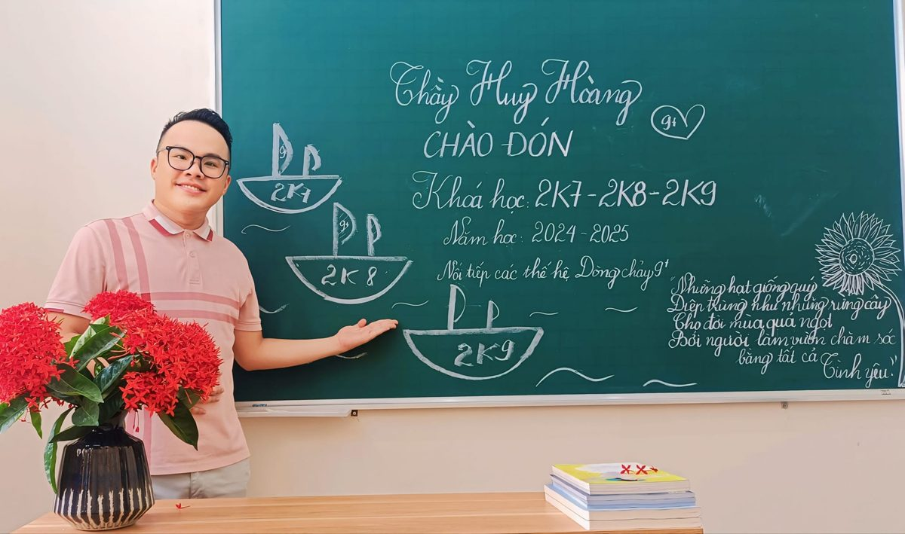<figcaption>Bảng phấn ngày đầu năm học</figcaption></figure></div>
<div style="display: flex; gap: 2cqw; align-items: center; margin-top: 2.2cqw" class="mstack">
<div class="a drop" style="--d: .45s; flex: 0 0 56%"><figure class="pol" style="--t: -3deg"><span class="tape top t-red"></span>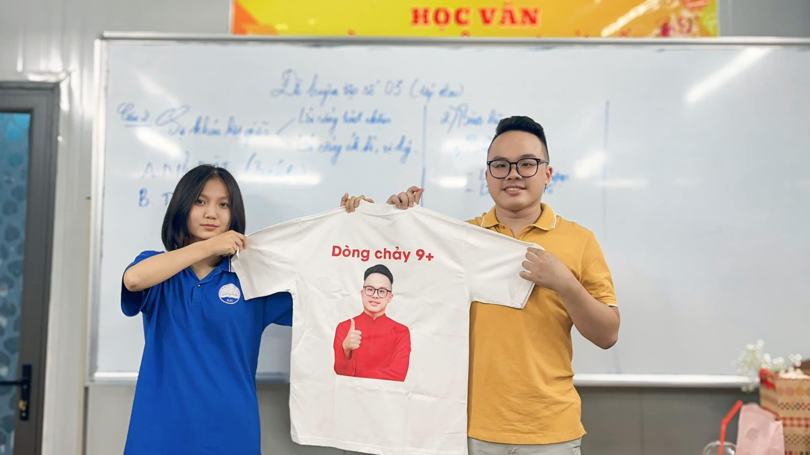<figcaption>Áo đồng phục “Dòng chảy 9+”</figcaption></figure></div>
<div class="a pop" style="--d: .65s; flex: 1">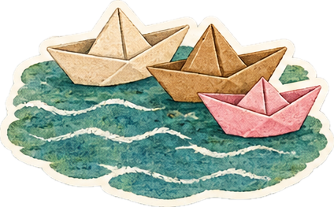</div>
</div>
<span class="pgno">4</span>
</div>
</div>` : null}

${(s3) ? html`<div class="spread ${k3}">
<div class="pg pgL dk" style="background-color: #173B44; color: #EAF2EE">
<p class="kicker a up" style="color: #9FD3C7">“Người lái đò sông Đà” — Nguyễn Tuân</p>
<div class="persp"><h2 class="h2 a stand" style="--d: .1s">Người lái đò<br />của chúng con</h2></div>
<p class="txt a up" style="--d: .25s; color: #CFE3DC">Nguyễn Tuân gọi ông lái đò sông Đà là người có “tay lái ra hoa”: thuộc từng con thác, từng hòn đá, vượt trùng vi thạch trận mà vẫn ung dung.</p>
<p class="txt a up" style="--d: .35s; color: #CFE3DC">Thầy cũng là một người lái đò như thế. Mỗi năm một chuyến, thầy chở một lớp học trò qua những thác ghềnh của đề thi: đọc hiểu đánh đố, nghị luận xã hội, nghị luận văn học. Đưa chúng con sang bờ rồi, thầy lại lặng lẽ quay về bến cũ, đón chuyến sau.</p>
<div class="card a pop" style="--d: .55s">
<p class="hand" style="margin: 0; font-size: var(--k); color: #C8361D">Hồ sơ người lái đò</p>
<dl>
<dt>Họ tên</dt><dd>Nguyễn Huy Hoàng</dd>
<dt>Biệt danh</dt><dd>Vị thuyền trưởng</dd>
<dt>Bến đỗ</dt><dd>Lớp Văn Dòng chảy 9+</dd>
<dt>Hành trang</dt><dd>Phấn trắng, giáo án, cuốn Chốt hạ 9+</dd>
<dt>Lời hứa</dt><dd>“Học thầy thì các em yên tâm là 9+ hết thôi”</dd>
</dl>
</div>
<span class="pgno">5</span>
</div>
<div class="pg pgR dk" style="background-color: #173B44; color: #EAF2EE; display: flex; flex-direction: column">
<div class="fill" style="flex: 1; min-height: 0; display: grid; grid-template-columns: repeat(2, minmax(0, 1fr)); gap: 2cqw; padding: 1cqw .6cqw 2.4cqw">
<div class="a fromR" style="--d: .25s"><figure class="pol tall" style="--t: -2deg"><span class="tape top t-mint"></span><figcaption>Mũi thuyền, chợ nổi Cái Răng</figcaption></figure></div>
<div class="a drop" style="--d: .45s; padding-top: 3cqw"><figure class="pol tall" style="--t: 3deg"><span class="tape top t-sun"></span><figcaption>“Tay lái ra hoa”</figcaption></figure></div>
</div>
<div class="deco a pop hide-m" style="--d: .8s; right: 2cqw; bottom: 2.6cqw; width: 11cqw">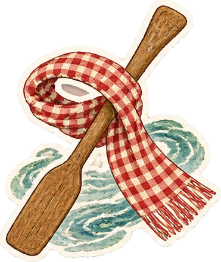</div>
<span class="pgno">6</span>
</div>
</div>` : null}

${(s4) ? html`<div class="spread ${k4}">
<div class="pg pgL dk" style="background-color: #3A1310; color: #F2E3C6">
<p class="kicker a up" style="color: #E3B556">“Chữ người tử tù” — Nguyễn Tuân</p>
<div class="persp"><h2 class="h2 a stand" style="--d: .1s">Cảnh cho chữ</h2></div>
<p class="txt a up" style="--d: .25s; color: #E4D2B4">Trong “Chữ người tử tù”, Huấn Cao cho chữ viên quản ngục giữa nhà lao tối tăm: cái đẹp và thiên lương vẫn toả sáng ở nơi tưởng như không thể. Lớp của thầy cũng vậy. Giữa áp lực thi cử, giữa những buổi chữa đề đến khuya, thầy vẫn “cho chữ” chúng con: không phải chữ để đi thi, mà chữ để làm người. Ba con chữ thầy trao, chúng con chép lại trên ba tấm lụa bên cạnh.</p>
<div style="display: flex; gap: 2cqw; align-items: flex-start; margin-top: 2cqw" class="mstack">
<div class="a pop" style="--d: .65s; flex: 0 0 30%"></div>
<div class="a fromL" style="--d: .5s; flex: 1"><figure class="pol" style="--t: -3deg"><span class="tape top t-sun"></span>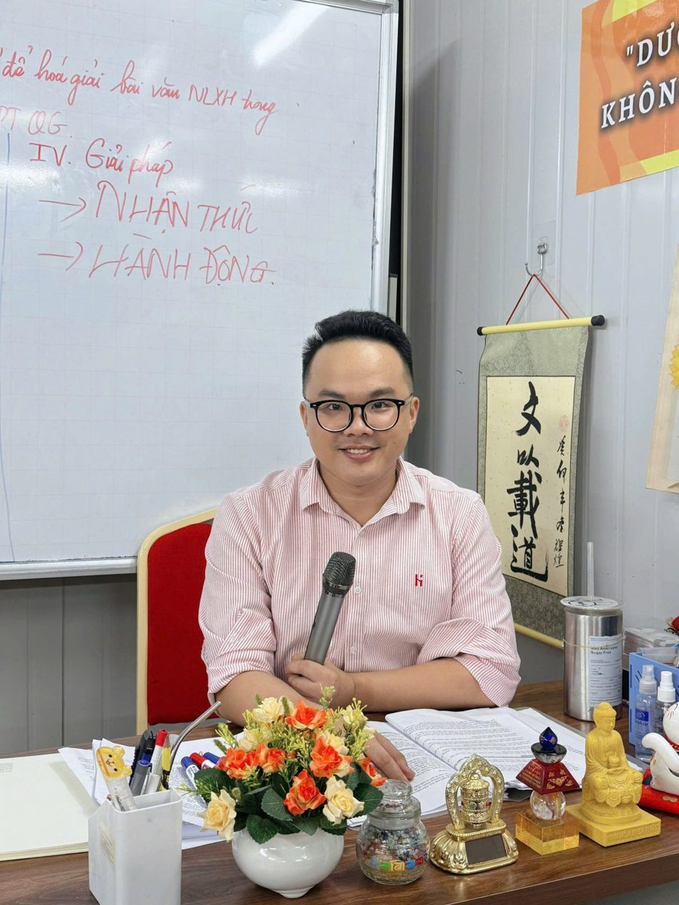<figcaption>Bên bức thư pháp “Văn dĩ tải đạo”</figcaption></figure></div>
</div>
<span class="pgno">7</span>
</div>
<div class="pg pgR dk" style="background-color: #3A1310; color: #F2E3C6; display: flex; flex-direction: column">
<div style="display: flex; gap: 2cqw; align-items: flex-start">
<p class="hand a up" style="--d: .2s; flex: 1; margin: 0; font-size: var(--k); color: #F2C063">Thầy bấm vào từng tấm lụa để lật.</p>
<div class="a fromR" style="--d: .3s; flex: 0 0 34%"><figure class="pol" style="--t: 4deg"><span class="tape top t-red"></span><figcaption>Người cho chữ</figcaption></figure></div>
</div>
<div style="flex: 1; display: grid; grid-template-columns: 1fr; grid-template-rows: repeat(3, minmax(0, 1fr)); gap: 1.2cqw; margin-top: 1.6cqw; min-height: 240px" class="mstack">
${(words || []).map((w, $index) => html`<div class="a pop" style="--d: ${w.d}s; min-height: 76px">
<button type="button" class="flip ${w.on}" onClick=${w.toggle} aria-label=${w.label}>
<span class="inner">
<span class="face silk"><span style="font-family: 'Dancing Script', cursive; font-size: max(30px, 3.4cqw); line-height: 1; color: #C8361D">${w.word}</span></span>
<span class="face back" style="background: #A82C17; color: #FBE6BE; box-shadow: 0 0 40px rgba(240,140,40,.3)"><span style="font-family: 'Fraunces', serif; font-style: italic; font-size: max(16px, 1.6cqw); line-height: 1.3">${w.quote}</span></span>
</span>
</button>
</div>`)}
</div>
<span class="pgno">8</span>
</div>
</div>` : null}

${(s5) ? html`<div class="spread ${k5}">
<div class="pg pgL dk" style="background-color: #1B2747; color: #EFE3C8">
<p class="kicker a up" style="color: #F2C063">“Hai đứa trẻ” — Thạch Lam</p>
<div class="persp"><h2 class="h2 a stand" style="--d: .1s">Ngọn đèn<br />những tối ôn thi</h2></div>
<p class="txt a up" style="--d: .25s; color: #DCD3C0">Liên và An thức đợi chuyến tàu đêm chỉ để nhìn thấy một chút ánh sáng từ thế giới khác. Những tối ôn thi, chúng con cũng thức: đợi hết ca học, đợi bài chữa, đợi một dòng nhận xét của thầy. Có hôm lớp online đông tới 228 người, mười giờ đêm màn hình vẫn sáng. Có hôm tan học, cả đám đi xe máy về qua phố vắng, đèn đường vàng như ngọn đèn chợ huyện. Thầy là ngọn đèn ấy: nhỏ thôi, nhưng đủ để chúng con không thấy mình lạc.</p>
<div class="a pop" style="--d: .45s; display: flex; align-items: center; gap: 2cqw; margin-top: 2cqw">
<div class="lamp" style="width: 8cqw; min-width: 70px; flex: none"></div>
<div class="sticky hand" style="--t: -3deg; font-size: var(--k); color: #3B2A12">“Một nhà văn thiên tài là một người muốn cảm nhận mọi vẻ đẹp man mác của vũ trụ.” — Thạch Lam</div>
</div>
<div class="deco a fromR hide-m" style="--d: .7s; left: 3cqw; right: 3cqw; bottom: 3cqw"></div>
<span class="pgno">9</span>
</div>
<div class="pg pgR dk" style="background-color: #1B2747; color: #EFE3C8">
<div style="display: grid; grid-template-columns: repeat(2, minmax(0, 1fr)); gap: 1.6cqw">
<div class="a fromR" style="--d: .2s"><figure class="pol" style="--t: 3deg"><span class="tape top t-sun"></span><figcaption>Đường về sau giờ học</figcaption></figure></div>
<div class="a fromR" style="--d: .35s; margin-top: 3cqw"><figure class="pol" style="--t: -4deg"><span class="tape top t-ink"></span><figcaption>228 người cùng thức</figcaption></figure></div>
<div class="a up" style="--d: .5s; grid-column: span 2"><figure class="pol" style="--t: -1deg"><span class="tape tl t-pink"></span><span class="tape tr t-mint"></span><figcaption>Những ngọn đèn nhỏ trên phố</figcaption></figure></div>
</div>
<div class="deco a pop hide-m" style="--d: .8s; right: 1cqw; top: 1cqw; width: 12cqw"></div>
<span class="pgno">10</span>
</div>
</div>` : null}

${(s6) ? html`<div class="spread ${k6}">
<div class="pg pgL tex" style="background-color: #F3E3C3">
<p class="kicker a up" style="color: #9A3B1E">“Đất Nước” — Nguyễn Khoa Điềm</p>
<div class="persp"><h2 class="h2 a stand" style="--d: .1s; color: #3B2A12">Lớp học là nơi<br />ta hò hẹn</h2></div>
<p class="txt a up" style="--d: .25s">Nguyễn Khoa Điềm viết rằng Đất Nước có trong mỗi chúng ta, trong những điều bình dị nhất. Lớp Văn của thầy cũng vậy: là căn phòng chật kín người, là tiếng cười khi thầy pha trò giữa giờ chữa đề, là chiếc khẩu trang đeo vội lúc tan học, là cuốn Chốt hạ 9+ đứa nào cũng ôm khư khư như báu vật.</p>
<div class="sticky hand a pop" style="--d: .45s; --t: 2deg; margin-top: 1.4cqw; font-size: var(--k); color: #3B2A12">“Trong anh và em hôm nay / Đều có một phần Đất Nước.” Trong mỗi đứa chúng con, đều có một phần lớp Văn.</div>
<div class="a fromL" style="--d: .6s; width: 64%; margin: 2cqw 0 0 6%"><figure class="pol" style="--t: -3deg"><span class="tape top t-pink"></span>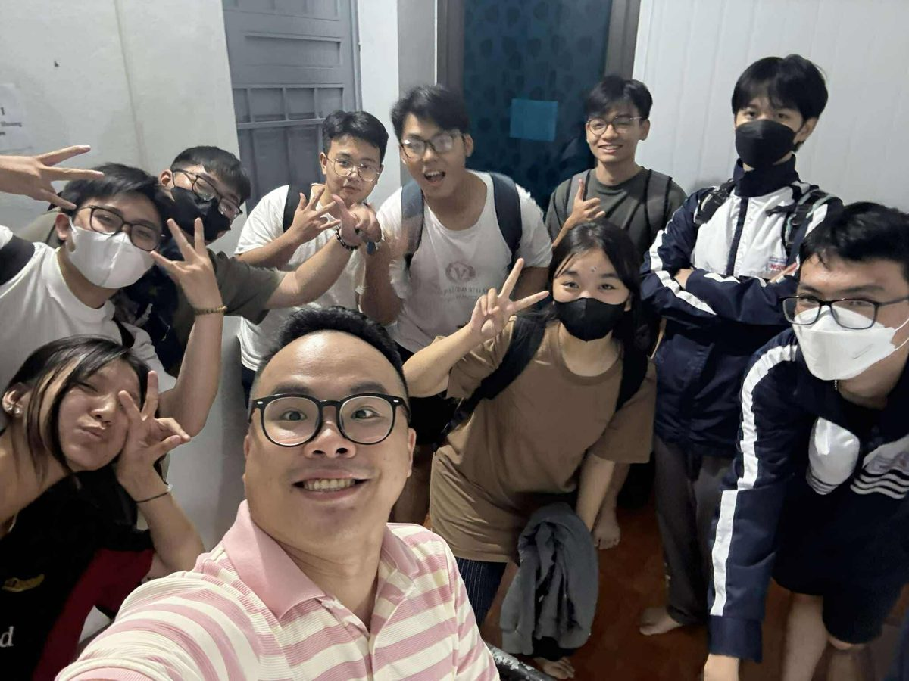<figcaption>Giờ tan học</figcaption></figure></div>
<span class="pgno">11</span>
</div>
<div class="pg pgR tex" style="background-color: #F3E3C3">
<div class="a fromR" style="--d: .2s; width: 94%; margin: .6cqw auto 0"><figure class="pol" style="--t: 1.5deg"><span class="tape top t-sun"></span><figcaption>Cả lớp và cuốn Chốt hạ 9+</figcaption></figure></div>
<div style="display: flex; gap: 2cqw; align-items: flex-start; margin-top: 2.4cqw">
<div class="a drop" style="--d: .45s; flex: 0 0 40%"><figure class="pol" style="--t: -4deg"><span class="tape top t-red"></span>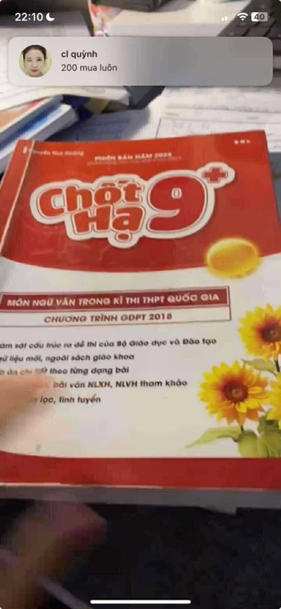<figcaption>Sách gối đầu</figcaption></figure></div>
<p class="hand a up" style="--d: .6s; flex: 1; margin: 2cqw 0 0; font-size: var(--k); line-height: 1.5; color: #5E3A1E">Bìa đỏ, chữ vàng, trang nào cũng dày chữ thầy. Hết năm, cuốn sách của đứa nào cũng nhàu, cũng đầy highlight.</p>
</div>
<span class="pgno">12</span>
</div>
</div>` : null}

${(s7) ? html`<div class="spread ${k7}">
<div class="pg pgL tex" style="background-color: #DCEDE8">
<div style="display: flex; gap: 2cqw; align-items: flex-start" class="mstack">
<div style="flex: 1">
<p class="kicker a up" style="color: #1F6F6B">“Sóng” — Xuân Quỳnh</p>
<div class="persp"><h2 class="h2 a stand" style="--d: .1s; color: #173B44">Dữ dội<br />và dịu êm</h2></div>
<p class="txt a up" style="--d: .25s">Xuân Quỳnh viết về con sóng “dữ dội và dịu êm, ồn ào và lặng lẽ”. Một năm ôn thi cũng thế: có những tuần đề khó dồn dập như sóng lớn, có những chiều lặng đi vì một bài văn chưa ưng. Nhưng như con sóng nào rồi cũng tìm ra tận bể, chúng con cứ thế đi qua bốn con sóng này, có thầy chèo cùng.</p>
</div>
</div>
<div style="display: grid; grid-template-columns: repeat(2, minmax(0, 1fr)); gap: 2cqw; margin-top: 2cqw">
${(wavesL || []).map((s, $index) => html`<div class="a ${s.anim}" style="--d: ${s.d}s"><figure class="pol" style="--t: ${s.t}deg"><span class="tape top ${s.tape}"></span><figcaption style="text-align: left"><b style="font-family: 'Fraunces', serif; color: #C8361D">${s.n} · ${s.title}</b><br />${s.text}</figcaption></figure></div>`)}
</div>
<span class="pgno">13</span>
</div>
<div class="pg pgR tex" style="background-color: #DCEDE8">
<div style="display: grid; grid-template-columns: repeat(2, minmax(0, 1fr)); gap: 2cqw; margin-top: 1cqw">
${(wavesR || []).map((s, $index) => html`<div class="a ${s.anim}" style="--d: ${s.d}s"><figure class="pol" style="--t: ${s.t}deg"><span class="tape top ${s.tape}"></span><figcaption style="text-align: left"><b style="font-family: 'Fraunces', serif; color: #C8361D">${s.n} · ${s.title}</b><br />${s.text}</figcaption></figure></div>`)}
</div>
<div class="a up hide-m" style="--d: .7s; position: absolute; left: 3cqw; right: 3cqw; bottom: 3cqw"></div>
<span class="pgno">14</span>
</div>
</div>` : null}

${(s8) ? html`<div class="spread ${k8}">
<div class="pg pgL tex" style="background-color: #EADFC8">
<p class="kicker a up" style="color: #9A3B1E">Sổ tay lý luận · những câu thầy dạy để mở bài</p>
<div class="persp"><h2 class="h2 a stand" style="--d: .1s; color: #3B2A12">Điểm tựa<br />của bài văn 9+</h2></div>
<p class="txt a up" style="--d: .25s">Thầy dạy: muốn bài văn đứng vững thì phải có điểm tựa lý luận. Thế là sổ của đứa nào cũng kín những câu thế này, thuộc đến mức chỉ cần nghe tên tác giả là đọc được cả câu. Có câu để mở bài, có câu để kết bài, có câu để “nâng cao vấn đề” lấy trọn điểm.</p>
<div class="quips a up" style="--d: .35s"><span class="hand quip-h">Và mỗi lần thầy mở màn bằng:</span><span class="quip" style="--t: -2deg">“Công thức đỉnh cao”</span><span class="quip" style="--t: 1.5deg">“Kĩ thuật hoá giải dạng bài…”</span><span class="quip" style="--t: -1deg">“Thủ khoa sẽ viết như sau:”</span><span class="hand quip-h">… là cả lớp biết sắp được 9+.</span></div>
<div class="notes" style="display: grid; grid-template-columns: repeat(2, minmax(0, 1fr)); gap: 1.6cqw; margin-top: 1.6cqw">
${(notesL || []).map((n, $index) => html`<div class="a ${n.anim}" style="--d: ${n.d}s"><div class="note ${n.color}" style="--t: ${n.t}deg"><span class="pin" aria-hidden="true"></span><span class="nq">${n.q}</span><span class="na">${n.a}</span></div></div>`)}
</div>
<span class="pgno">15</span>
</div>
<div class="pg pgR tex" style="background-color: #EADFC8; display: flex; flex-direction: column">
<div class="notes fill" style="flex: 1; min-height: 0; display: grid; grid-template-columns: repeat(2, minmax(0, 1fr)); grid-template-rows: repeat(4, minmax(0, 1fr)); gap: 1.6cqw 1.8cqw; padding: .6cqw .4cqw 2.4cqw">
${(notesR || []).map((n, $index) => html`<div class="a ${n.anim}" style="--d: ${n.d}s"><div class="note ${n.color}" style="--t: ${n.t}deg"><span class="pin" aria-hidden="true"></span><span class="nq">${n.q}</span><span class="na">${n.a}</span></div></div>`)}
</div>
<span class="pgno">16</span>
</div>
</div>` : null}

${(s9) ? html`<div class="spread ${k9}">
<div class="pg pgL tex" style="background-color: #E4E8D6">
<div class="persp"><div class="a stand" style="width: 64%; margin: -1cqw auto 0"></div></div>
<p class="kicker a up" style="--d: .2s; color: #2F5A43; margin-top: 1cqw">“Tây Tiến” — Quang Dũng</p>
<h2 class="h2 a up" style="--d: .3s; color: #1F3A2C">Đoàn quân áo dài về Văn Miếu</h2>
<p class="txt a up" style="--d: .45s">Quang Dũng nhớ về đoàn binh Tây Tiến đi qua núi cao sương dày mà vẫn hào hoa, lãng mạn. Ngày 21/6/2025, “đoàn quân” của thầy cũng lên đường: không phải ra chiến trường, mà về Văn Miếu – Quốc Tử Giám, khoác áo dài, dâng hương trước kỳ thi. Thầy đi giữa, áo đỏ rực như một vị thuyền trưởng. Hôm ấy chúng con hiểu: mình không đi thi một mình.</p>
<div class="a fromL" style="--d: .55s; width: 46%; margin: 1cqw 0 0 4%"><figure class="pol" style="--t: -2deg"><span class="tape top t-tre"></span><figcaption>Đoàn quân dưới băng rôn</figcaption></figure></div>
<span class="pgno">17</span>
</div>
<div class="pg pgR tex" style="background-color: #E4E8D6">
<p class="hand a up" style="margin: 0; font-size: var(--k); color: #4E6B57">“Sương lấp đoàn quân mỏi” — còn chúng con thì chẳng mỏi chút nào.</p>
<div style="display: grid; grid-template-columns: repeat(3, minmax(0, 1fr)); gap: 2cqw 1.6cqw; margin-top: 2.4cqw">
${(photos || []).map((p, $index) => html`<div class="a ${p.anim}" style="--d: ${p.d}s"><figure class="pol" style="--t: ${p.t}deg"><span class="tape top ${p.tape}"></span><figcaption>${p.cap}</figcaption></figure></div>`)}
</div>
<div class="deco a pop hide-m" style="--d: 1.1s; right: 2cqw; bottom: 2cqw; width: 8cqw"></div>
<span class="pgno">18</span>
</div>
</div>` : null}

${(s10) ? html`<div class="spread ${k10}">
<div class="pg pgL vm" style="background-color: #5A1410; color: #F6E7C8">
<div class="a drop" style="--d: 0s; width: 80%; margin: -1.4cqw auto 0"></div>
<p class="kicker a up" style="color: #E9C46A; text-align: center; margin-top: .4cqw">Văn Miếu – Quốc Tử Giám · 21.6.2025</p>
<div class="persp"><h2 class="h2 a stand" style="--d: .1s; text-align: center; color: #F6D98B">Ngày 21 tháng 6</h2></div>
<p class="vm-rule a up" style="--d: .15s" aria-hidden="true"><span></span>✦<span></span></p>
<p class="txt a up" style="--d: .2s; color: #EBD9B8">Cả buổi sáng hôm ấy được ghi lại trong thước phim này: lễ dâng hương, những lời chúc, những nụ cười trước giờ vào trận. Thầy bấm vào để xem lại.</p>
<div class="a up" style="--d: .35s; margin: 1.2cqw auto 0; width: 90%; background: #000; box-shadow: 0 14px 30px rgba(0,0,0,.4)">
<video src="assets/video/video-van-mieu.mp4" poster="assets/img/video-van-mieu-poster.jpg" controls playsinline preload="metadata" onPlay=${videoPlay} style="display: block; width: 100%; aspect-ratio: 16 / 9; background: #000"></video>
</div>
<div style="display: flex; align-items: flex-end; gap: 1.6cqw; margin-top: 1cqw">
<p class="hand a up" style="--d: .55s; margin: 0; flex: 1; font-size: var(--cap); color: #E9C46A">Thầy bấm ▶ để xem. Nhạc nền tạm nghỉ, sang trang khác là nhạc chạy lại.</p>
<div class="a pop" style="--d: .8s; flex: 0 0 5.2cqw; min-width: 46px">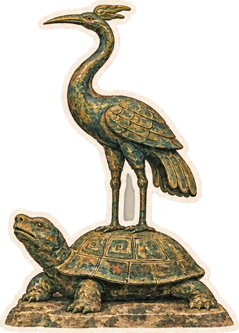</div>
</div>
<span class="pgno">19</span>
</div>
<div class="pg pgR vm" style="background-color: #5A1410; color: #F6E7C8; padding-right: 7.6cqw">
<p class="vm-doi hide-m" aria-hidden="true">Tôn sư trọng đạo</p>
<p class="kicker a up" style="color: #E9C46A">Buổi học cuối cùng</p>
<p class="txt a up" style="--d: .15s; color: #EBD9B8">Từ Văn Miếu trở về, cả lớp quây quần trong căn phòng quen thuộc cho buổi học cuối cùng. Phòng chật kín, hoa trên bàn, cây đàn trên tay. Mười hai giây thôi, mà là cả một năm.</p>
<div class="a fromR" style="--d: .3s; margin-top: 1.6cqw">
<figure class="pol" style="--t: 2deg"><span class="tape top t-sun"></span>
<video src="assets/video/video-lop-hoc.mp4" poster="assets/img/video-lop-hoc-poster.jpg" controls playsinline preload="metadata" onPlay=${videoPlay} style="display: block; width: 100%; aspect-ratio: 16 / 9; background: #000"></video>
<figcaption>Buổi học cuối cùng</figcaption></figure>
</div>
<div style="display: flex; gap: 2cqw; align-items: flex-start; margin-top: 1.6cqw">
<div class="a drop" style="--d: .55s; flex: 0 0 40%"><figure class="pol" style="--t: -3deg"><span class="tape top t-red"></span><figcaption>Sân Văn Miếu sáng hôm ấy</figcaption></figure></div>
<div style="flex: 1; display: flex; flex-direction: column; align-items: center; gap: 1cqw">
<div class="a pop" style="--d: .7s; width: 82%"></div>
<p class="hand a up" style="--d: .85s; margin: 0; font-size: var(--cap); line-height: 1.45; color: #E9C46A; text-align: center">Có những khoảnh khắc chỉ dài mười mấy giây, mà chúng con mang theo cả đời.</p>
</div>
</div>
<span class="pgno">20</span>
</div>
</div>` : null}

${(s11) ? html`<div class="spread ${k11}">
<div class="pg pgL tex" style="background-color: #EFE6D2">
<p class="kicker a up" style="color: #6B4A2B">“Nhật ký Đặng Thùy Trâm”</p>
<div class="persp"><h2 class="h2 a stand" style="--d: .1s; color: #3B2A12">Nhật ký<br />mùa thi</h2></div>
<p class="txt a up" style="--d: .25s">Đặng Thùy Trâm viết nhật ký giữa chiến trường Đức Phổ: những trang giản dị mà kiên cường, để lại cho người đọc một câu ai cũng nhớ: “Đời phải trải qua giông tố nhưng không được cúi đầu trước giông tố.”</p>
<p class="txt a up" style="--d: .35s">Mùa thi của chúng con nhỏ bé hơn rất nhiều, nhưng cũng có giông tố của nó. Thầy dạy chúng con đứng thẳng mà đi qua. Bên cạnh là vài trang nhật ký chung của cả lớp, ghi đúng ngày, đúng giờ.</p>
<div class="a fromL" style="--d: .55s; width: 46%; margin: 1.6cqw 0 0 6%"><figure class="pol" style="--t: -3deg"><span class="tape top t-sun"></span><figcaption>Thầy giữa những trang sách</figcaption></figure></div>
<span class="pgno">21</span>
</div>
<div class="pg pgR diary" style="background-color: #FBF6EA">
${(diary || []).map((dy, $index) => html`<div class="dy a up" style="--d: ${dy.d}s"><p class="dy-date">${dy.date}</p><p class="dy-text">${dy.text}</p></div>`)}
<span class="pgno">22</span>
</div>
</div>` : null}

${(s12) ? html`<div class="spread ${k12}">
<div class="pg pgL tex" style="background-color: #F4F1EA">
<p class="kicker a up" style="color: #2C4A7E">“Vội vàng” — Xuân Diệu</p>
<div class="deco a pop hide-m" style="--d: .6s; right: 2.4cqw; top: 1.6cqw; width: 7cqw">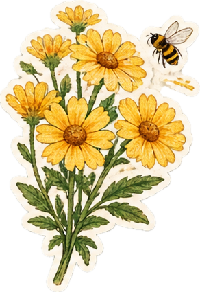</div>
<div class="persp"><h2 class="h2 a stand" style="--d: .1s; color: #1E2B4A">Tôi muốn<br />tắt nắng đi</h2></div>
<p class="txt a up" style="--d: .25s">Xuân Diệu muốn tắt nắng đi cho màu đừng nhạt mất, buộc gió lại cho hương đừng bay đi. Chúng con cũng từng muốn giữ mãi một khoảnh khắc như thế: buổi sáng tra điểm, tay run run gõ số báo danh, màn hình chậm như cả thế kỷ, rồi con số hiện ra. 9.25. 9.50. 9.75. Tin nhắn báo tin bay về máy thầy, kèm bao nhiêu là dấu chấm than.</p>
<p class="hand a up" style="--d: .35s; margin: 1cqw 0 0; font-size: var(--k); color: #2C4A7E">Thầy hay nhắc lời Xuân Diệu: “Thơ là hiện thực, thơ là cuộc đời, thơ còn là thơ nữa.” Hôm tra điểm, chúng con hiểu: con số trên màn hình là hiện thực, còn niềm vui thì là thơ.</p>
<div class="tra a pop" style="--d: .45s">
<p class="tra-h">Tra cứu điểm · Lớp Văn thầy Hoàng</p>
<div class="tra-row"><span>Số báo danh</span><span class="tra-in">12V1-2025</span></div>
<div class="tra-row"><span>Mã xác nhận</span><span class="tra-in cap">9PLUS</span></div>
<button type="button" class="tra-btn" onClick=${traCuu}>${traLabel}</button>
${(traDone) ? html`<div class="tra-res"><span>Ngữ văn: <b>9+</b></span><span>Lòng biết ơn gửi thầy: <b>không giới hạn</b></span></div>` : null}
</div>
<span class="pgno">23</span>
</div>
<div class="pg pgR tex" style="background-color: #F4F1EA; display: flex; flex-direction: column">
<p class="hand a up" style="margin: 0; font-size: var(--k); color: #2C4A7E">Ảnh chụp màn hình thật, gửi thầy lúc 8 giờ sáng. Bấm để xem rõ.</p>
<div class="fill" style="flex: 1; min-height: 0; display: grid; grid-template-columns: repeat(2, minmax(0, 1fr)); grid-template-rows: repeat(2, minmax(0, 1fr)); gap: 2.4cqw 2cqw; padding: 2cqw .6cqw 2.4cqw">
${(scores || []).map((sc, $index) => html`<div class="a ${sc.anim}" style="--d: ${sc.d}s"><button type="button" class="zoomable" onClick=${sc.zoom} aria-label="Phóng to ${sc.cap}"><figure class="pol tall" style="--t: ${sc.t}deg"><span class="tape top ${sc.tape}"></span><figcaption>${sc.cap}</figcaption></figure></button></div>`)}
</div>
<span class="pgno">24</span>
</div>
</div>` : null}

${(s13) ? html`<div class="spread ${k13}">
<div class="pg pgL dk" style="background-color: #8E1F17; color: #F8E7C4">
<p class="kicker a up" style="color: #F2C063">“Đàn ghi ta của Lorca” — Thanh Thảo</p>
<div class="persp"><h2 class="h2 a stand" style="--d: .1s">Lớp Văn thầy Hoàng</h2></div>
<p class="hand a up" style="--d: .2s; margin: .6cqw 0 0; font-size: var(--k); color: #F1CFB0">li-la li-la li-la… thành 9+ 9+ 9+</p>
<p class="hand a up" style="--d: .22s; margin: .4cqw 0 0; font-size: var(--cap); color: #F2C063">“Thơ là âm nhạc của tâm hồn, nhất là những tâm hồn cao cả, đa cảm.” — Voltaire</p>
<p class="txt a up" style="--d: .25s; color: #F8E7C4">Thanh Thảo viết về tiếng đàn của Lorca, tiếng đàn còn ngân mãi kể cả khi người nghệ sĩ đã đi xa. Lớp mình cũng có một tiếng đàn như thế: bài hát “Lớp Văn thầy Hoàng” chúng con viết tặng thầy, gói lại những điều thầy dạy, rằng văn chương là chiếc cầu, là nhân văn, là cách để hiểu nhau.</p>
<div style="display: flex; gap: 2cqw; align-items: center; margin-top: 1.6cqw">
<div class="a fromL" style="--d: .35s; flex: 0 0 34%"></div>
<div class="a bob" style="flex: 0 0 9%"></div>
</div>
<div class="a up" style="--d: .65s; position: relative; width: 78%; margin: 2cqw auto 0; background: #F2E3C6; color: #2A231C; padding: 1.4cqw; box-shadow: 0 12px 24px rgba(0,0,0,.3); rotate: -2deg">
<div style="background: #2A231C; padding: 1cqw 2.4cqw; display: flex; justify-content: space-between; align-items: center">
<svg class="reel ${spinCls}" style="width: 3.6cqw; height: 3.6cqw" viewBox="0 0 64 64" aria-hidden="true"><circle cx="32" cy="32" r="28" fill="#F2E3C6"></circle><circle cx="32" cy="32" r="9" fill="#2A231C"></circle><path d="M32 6v14M32 44v14M6 32h14M44 32h14" stroke="#2A231C" stroke-width="5"></path></svg>
<span class="hand" style="color: #F2E3C6; font-size: var(--cap)">Giai điệu 9+ · Side A</span>
<svg class="reel ${spinCls}" style="width: 3.6cqw; height: 3.6cqw" viewBox="0 0 64 64" aria-hidden="true"><circle cx="32" cy="32" r="28" fill="#F2E3C6"></circle><circle cx="32" cy="32" r="9" fill="#2A231C"></circle><path d="M32 6v14M32 44v14M6 32h14M44 32h14" stroke="#2A231C" stroke-width="5"></path></svg>
</div>
<button type="button" onClick=${togglePlay} style="margin-top: 1cqw; width: 100%; min-height: 44px; border: none; background: #C8361D; color: #FBE6BE; font-family: 'Patrick Hand', cursive; font-size: var(--k); cursor: pointer">${playLabel}</button>
<span class="tape tl t-sun"></span><span class="tape tr t-pink"></span>
</div>
<span class="pgno">25</span>
</div>
<div class="pg pgR dk" style="background-color: #8E1F17; color: #2A231C">
<div style="display: grid; grid-template-columns: repeat(2, minmax(0, 1fr)); gap: 1.8cqw">
${(lyrics || []).map((l, $index) => html`<div class="a ${l.anim}" style="--d: ${l.d}s">
<div class="sticky" style="--t: ${l.t}deg; background-color: #FBF3DF; background-image: repeating-linear-gradient(180deg, transparent 0 calc(2.3cqw - 1px), #CFDDEE calc(2.3cqw - 1px) 2.3cqw)">
<p class="hand" style="margin: 0; font-size: var(--cap); color: #C8361D">${l.tag}</p>
<p style="margin: 0; white-space: pre-line; font-size: max(13px, 1.15cqw); line-height: 2.3cqw">${l.text}</p>
</div>
</div>`)}
</div>
<span class="pgno" style="color: #F8E7C4">26</span>
</div>
</div>` : null}

${(s14) ? html`<div class="spread ${k14}">
<div class="pg pgL dk" style="background-color: #3D403C; color: #EDE6D6; display: flex; flex-direction: column; align-items: center; text-align: center">
<div class="deco swing hide-m" style="left: 3cqw; top: 0; width: 6cqw"></div>
<div class="deco swing hide-m" style="right: 3cqw; top: 0; width: 5.6cqw; animation-delay: -2s"></div>
<p class="kicker a up" style="color: #E3B556; margin-top: 2cqw">Bia Tiến sĩ</p>
<div class="persp"><h2 class="h2 a stand" style="--d: .1s">Bảng vàng<br />Dòng chảy 9+</h2></div>
<p class="txt a up" style="--d: .25s; color: #CFC6B2">Ở Văn Miếu, những tấm bia Tiến sĩ đứng trên lưng rùa đá, khắc tên người đỗ đạt để đời sau noi theo. Chúng con không có bia đá, nhưng có trang này. Mỗi con điểm bên cạnh là một năm thức khuya, một chồng đề luyện, và một lời hứa với thầy: “Con phải được 9+ Văn.” Kỳ thi tốt nghiệp THPT 2025, Khoá 2K7. Như “Hoa trái quanh tôi”: vườn thầy vun cả năm, đến mùa thì trĩu quả.</p>
<div class="persp" style="width: 40%; margin-top: auto"><div class="a stand" style="--d: .45s"></div></div>
<span class="pgno">27</span>
</div>
<div class="pg pgR dk" style="background-color: #3D403C; color: #2A2620; display: flex; flex-direction: column">
<div class="persp fill2" style="flex: 1; min-height: 0; display: grid; grid-template-columns: repeat(4, minmax(0, 1fr)); grid-template-rows: repeat(3, minmax(0, 1fr)); gap: 1.8cqw 1cqw; padding: .6cqw 0 1.8cqw">
${(honors || []).map((h, $index) => html`<div class="a stand" style="--d: ${h.d}s; display: flex; flex-direction: column; align-items: center">
<div class="stele" style="flex: 1; min-height: 0; width: 100%; display: flex; flex-direction: column; justify-content: center; padding: 1.8cqw .6cqw 1.2cqw; background: #BDB6A5; border-radius: 6cqw 6cqw 3px 3px; text-align: center; box-shadow: inset 0 0 0 3px #A49C8B, inset 0 0 0 7px #BDB6A5, inset 0 0 0 8px #A49C8B">
<p style="margin: 0; font-size: max(12px, .8cqw); letter-spacing: .14em; color: #3F392F">ĐIỂM VĂN</p>
<p style="margin: .2cqw 0 .5cqw; font-family: 'Fraunces', serif; font-weight: 600; font-size: max(26px, 3.4cqw); line-height: 1; color: #8E1F17">${h.score}</p>
<p style="margin: 0; font-family: 'Fraunces', serif; font-weight: 600; font-size: max(13px, 1.3cqw); line-height: 1.2">${h.name}</p>
</div>
<div style="width: 76%; height: 1.4cqw; background: #6E6A5E; border-radius: 0 0 40px 40px"></div>
</div>`)}
</div>
<span class="pgno" style="color: #EDE6D6">28</span>
</div>
</div>` : null}

${(s15) ? html`<div class="spread ${k15}">
<div class="pg pgL dk" style="background-color: #6E1A12; color: #FBE6BE">
<p class="kicker a up" style="color: #F2C063">“Rừng xà nu” — Nguyễn Trung Thành</p>
<div class="deco a pop hide-m" style="--d: .6s; right: 2.4cqw; top: 1.6cqw; width: 8.5cqw">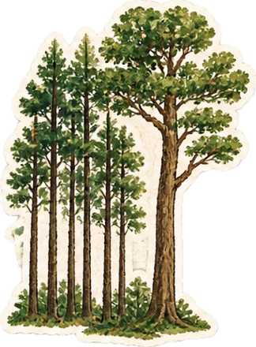</div>
<div class="persp"><h2 class="h2 a stand" style="--d: .1s">Những gương mặt<br />Dòng chảy 9+</h2></div>
<p class="txt a up" style="--d: .25s; color: #F3D9B8">Trong “Rừng xà nu”, cạnh một cây xà nu ngã xuống đã có bốn năm cây con mọc lên, cứ thế nối nhau thành rừng. Lớp Văn của thầy cũng thế: khoá trước vững vàng thì khoá sau vươn lên. Mỗi gương mặt ở đây là một cây xà nu non đã đứng thẳng giữa mùa thi 2025.</p>
<div class="fill" style="display: grid; grid-template-columns: repeat(2, minmax(0, 1fr)); gap: 1.4cqw; margin-top: 1.4cqw; width: 54%">
${(postersL || []).map((ps, $index) => html`<div class="a pop" style="--d: ${ps.d}s"><button type="button" class="zoomable poster" onClick=${ps.zoom} aria-label="Phóng to ${ps.cap}"></button></div>`)}
</div>
<p class="hand a up" style="--d: .9s; margin: 1.6cqw 0 0; font-size: var(--cap); color: #F2C063">“Thơ là viên kim cương lấp lánh dưới ánh mặt trời” (Sóng Hồng). Mỗi gương mặt ở đây cũng lấp lánh như thế. Bấm vào để xem rõ.</p>
<span class="pgno">29</span>
</div>
<div class="pg pgR dk" style="background-color: #6E1A12; color: #FBE6BE; display: flex; flex-direction: column">
<div class="fill" style="flex: 1; min-height: 0; display: grid; grid-template-columns: repeat(3, minmax(0, 1fr)); grid-template-rows: repeat(3, minmax(0, 1fr)); gap: 1.4cqw 1.4cqw; padding: .4cqw 0 2cqw">
${(postersR || []).map((ps, $index) => html`<div class="a ${ps.anim}" style="--d: ${ps.d}s"><button type="button" class="zoomable poster" onClick=${ps.zoom} aria-label="Phóng to ${ps.cap}"></button></div>`)}
</div>
<span class="pgno">30</span>
</div>
</div>` : null}

${(s16) ? html`<div class="spread ${k16}">
<div class="pg pgL tex" style="background-color: #E6EEF6">
<p class="kicker a up" style="color: #2C4A7E">“Việt Bắc” — Tố Hữu</p>
<div class="deco a pop hide-m" style="--d: .6s; right: 2.4cqw; top: 1.6cqw; width: 9.5cqw">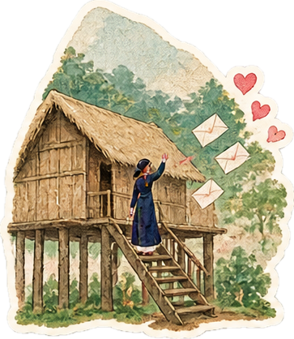</div>
<div class="persp"><h2 class="h2 a stand" style="--d: .1s; color: #1E2B4A">Mình về mình<br />có nhớ ta?</h2></div>
<p class="txt a up" style="--d: .25s">Tố Hữu hỏi người về xuôi có còn nhớ Việt Bắc. Chúng con thì chẳng cần hỏi, vì câu trả lời nằm cả trong hộp thư của thầy. Sau mỗi bài khảo sát, sau ngày thi, sau buổi tra điểm, tin nhắn cứ thế bay về. Bên cạnh là vài dòng thật, chúng con chép lại nguyên văn. Đúng như Gamzatov nói, những dòng ấy “sinh ra từ nụ cười trong sáng hay giọt nước mắt”, có cả “huhuhu” lẫn “hẹ hẹ”.</p>
<div style="display: flex; gap: 2cqw; align-items: flex-start; margin-top: 1.6cqw" class="mstack">
<div class="a fromL" style="--d: .45s; flex: 0 0 38%"><button type="button" class="zoomable" onClick=${zoomChat1} aria-label="Phóng to tin nhắn của Hoàng Lê Hải"><figure class="pol" style="--t: -3deg"><span class="tape top t-ink"></span>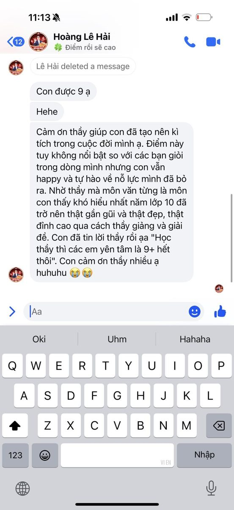<figcaption>Hoàng Lê Hải, 11:13</figcaption></figure></button></div>
<div class="a drop" style="--d: .6s; flex: 0 0 38%; margin-top: 1.6cqw"><button type="button" class="zoomable" onClick=${zoomChat2} aria-label="Phóng to tin nhắn của Quang Anh"><figure class="pol" style="--t: 3deg"><span class="tape top t-pink"></span>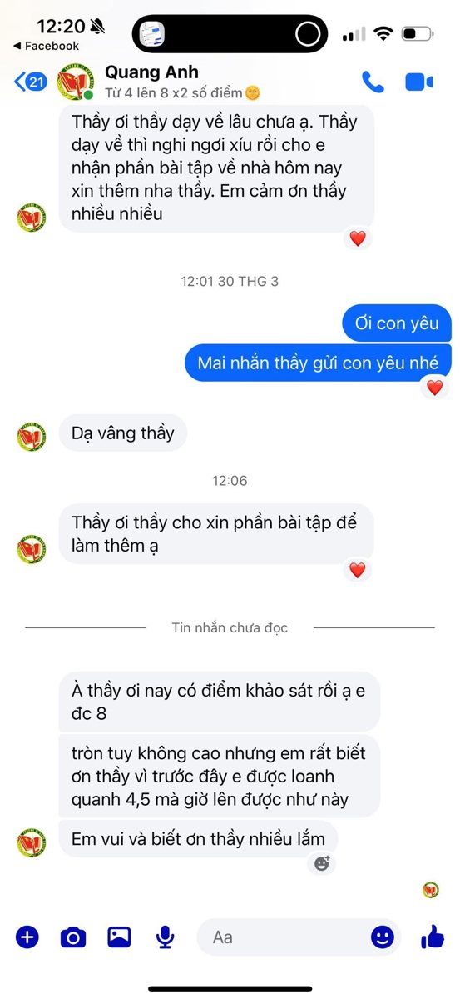<figcaption>Quang Anh, 12:20</figcaption></figure></button></div>
</div>
<span class="pgno">31</span>
</div>
<div class="pg pgR tex" style="background-color: #E6EEF6; display: flex; flex-direction: column">
<div class="chat">
${(chats || []).map((c, $index) => html`<div class="bubwrap ${c.side} a up" style="--d: ${c.d}s">
<span class="who">${c.who}</span>
<p class="bub">${c.text}</p>
</div>`)}
<div class="bubwrap a up" style="--d: 2.6s"><span class="who">Cả lớp 12V1</span><p class="bub typing"><i></i><i></i><i></i></p></div>
</div>
<span class="pgno">32</span>
</div>
</div>` : null}

${(s17) ? html`<div class="spread ${k17}">
<div class="pg pgL tex" style="background-color: #F1DFB6">
<p class="kicker a up" style="color: #7A5214">những phong thư</p>
<div class="persp"><h2 class="h2 a stand" style="--d: .1s; color: #3B2A12">Thư gửi thầy</h2></div>
<p class="txt a up" style="--d: .2s">Có những điều nói trực tiếp thì ngại, nên chúng con viết. Bốn lá thư dưới đây là của Mỹ Dung, Kim Ngọc, Thanh Vân và một bạn xin giấu tên, nhưng cũng là lời của cả lớp gửi thầy. Chế Lan Viên bảo thơ cần có hình, có ý và có tình. Thư của chúng con có thể vụng về hình và ý, nhưng tình thì đầy.</p>
<div style="display: grid; grid-template-columns: repeat(2, minmax(0, 1fr)); gap: 2.4cqw; margin-top: 3cqw; padding: 0 1cqw">
<div class="a fromL" style="--d: .3s"><figure class="pol" style="--t: -3deg"><figcaption>“Hãy nói lời yêu thật nhiều…”</figcaption></figure></div>
<div class="a fromL" style="--d: .5s; margin-top: 3cqw"><figure class="pol" style="--t: 3deg"><figcaption>“Trò của thầy thi xong rùi ạ”</figcaption></figure></div>
</div>
<div class="deco a pop hide-m" style="--d: .8s; right: 2cqw; top: 2cqw; width: 8cqw"></div>
<span class="pgno">33</span>
</div>
<div class="pg pgR tex" style="background-color: #F1DFB6; display: flex; flex-direction: column">
<p class="hand a up" style="margin: 0; font-size: var(--k); color: #6B5229">Rê chuột để hé thư, bấm để đọc trọn.</p>
<div class="one-letter" style="flex: 1; min-height: 0; display: grid; grid-template-columns: repeat(2, minmax(0, 1fr)); align-content: center; align-items: center; gap: 2.4cqw 2cqw; margin-top: 1.2cqw; padding: 0 1cqw 1.4cqw">
${(letters || []).map((lt, $index) => html`<div class="a ${lt.anim}" style="--d: ${lt.d}s; width: 100%">
<button type="button" class="env" onClick=${lt.open} aria-label="Mở thư: ${lt.name}">
<span class="body"></span><span class="letter">Kính gửi thầy…</span><span class="pocket"></span><span class="flap"></span><span class="seal">9+</span><span class="who">${lt.name}</span>
</button>
</div>`)}
<div class="a pop" style="--d: 1.2s; width: 12%; grid-column: 1 / -1; justify-self: end; margin-top: -3cqw"></div>
</div>
<span class="pgno">34</span>
</div>
</div>` : null}

${(s18) ? html`<div class="spread ${k18}">
<div class="pg pgL exam" style="background-color: #FBFAF5">
<div class="exam-h a up">
<div><p>Lớp 12V1 · Dòng chảy 9+</p><p><b>ĐỀ CHÍNH THỨC</b></p><p class="exam-note">(Đề thi có 2 trang)</p></div>
<div><p><b>KỲ THI CUỐI CÙNG · 20/11/2026</b></p><p>Bài thi: THẦY NGUYỄN HUY HOÀNG</p><p class="exam-note">Thời gian làm bài: cả đời, không kể thời gian phát đề</p></div>
</div>
<p class="txt a up" style="--d: .15s; margin-top: 1.4cqw">Lần này học trò ra đề, thầy làm bài. Thầy chọn một đáp án cho mỗi câu, chúng con chấm ngay bằng bút đỏ.</p>
${(quizL || []).map((q, $index) => html`<div class="q a up" style="--d: ${q.d}s">
<p class="q-t"><b>Câu ${q.n}.</b> ${q.text}</p>
<div class="opts">${(q.opts || []).map((o, $index) => html`<button type="button" class="opt ${o.cls}" onClick=${o.pick}><b>${o.k}.</b> ${o.t}</button>`)}</div>
<p class="q-fb hand">${q.fb}</p>
</div>`)}
<span class="pgno">35</span>
</div>
<div class="pg pgR exam" style="background-color: #FBFAF5; display: flex; flex-direction: column">
${(quizR || []).map((q, $index) => html`<div class="q a up" style="--d: ${q.d}s">
<p class="q-t"><b>Câu ${q.n}.</b> ${q.text}</p>
<div class="opts">${(q.opts || []).map((o, $index) => html`<button type="button" class="opt ${o.cls}" onClick=${o.pick}><b>${o.k}.</b> ${o.t}</button>`)}</div>
<p class="q-fb hand">${q.fb}</p>
</div>`)}
<div class="exam-res">
${(quizDone) ? html`<div class="exam-score a stamp" style="--d: -.45s"><span>${quizScore}</span><small>điểm</small></div>
<p class="hand a up" style="--d: -.2s; margin: 0; font-size: var(--k); color: #C8361D; max-width: 62%">Lời phê: ${quizComment}</p>` : null}
${(quizPending) ? html`<p class="hand" style="margin: 0; font-size: var(--cap); color: #8A7A66">Còn ${quizLeft} câu nữa là có điểm, thầy cố lên!</p>` : null}
<div class="a pop" style="--d: .7s; margin-left: auto; width: 8cqw; min-width: 64px; flex: none"></div>
</div>
<span class="pgno">36</span>
</div>
</div>` : null}

${(s19) ? html`<div class="spread ${k19}">
<div class="pg pgL dk" style="background-color: #22402F; color: #F1EAD3">
<p class="kicker a up" style="color: #E3C77A">Học bạ · lớp 12V1 nhận xét</p>
<div class="deco a pop hide-m" style="--d: .6s; right: 2.4cqw; top: 1.6cqw; width: 9cqw">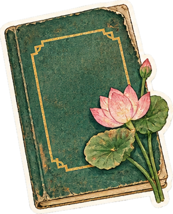</div>
<div class="persp"><h2 class="h2 a stand" style="--d: .1s">Học bạ<br />của thầy</h2></div>
<p class="txt a up" style="--d: .2s; color: #D9D2BA">Cả năm thầy chấm bài chúng con. Hôm nay đến lượt chúng con cầm bút đỏ.</p>
<dl class="hb-info a up" style="--d: .3s">
<dt>Họ và tên</dt><dd>Nguyễn Huy Hoàng</dd>
<dt>Năm học</dt><dd>2024 – 2025</dd>
<dt>Lớp phụ trách</dt><dd>Lớp Văn Dòng chảy 9+ · khoá 2K7</dd>
<dt>Hạnh kiểm</dt><dd>Tốt (rất, rất tốt)</dd>
<dt>Danh hiệu</dt><dd>Người thầy của năm, do học trò bầu</dd>
</dl>
<div style="display: flex; gap: 2cqw; margin-top: 2cqw">
<div class="a fromL" style="--d: .5s; flex: 0 0 32%"><figure class="pol" style="--t: -3deg"><span class="tape top t-sun"></span><figcaption>Ảnh thẻ học bạ</figcaption></figure></div>
<div class="a pop" style="--d: .7s; flex: 0 0 32%; margin-top: 1.4cqw"><figure class="pol" style="--t: 3deg"><span class="tape top t-mint"></span>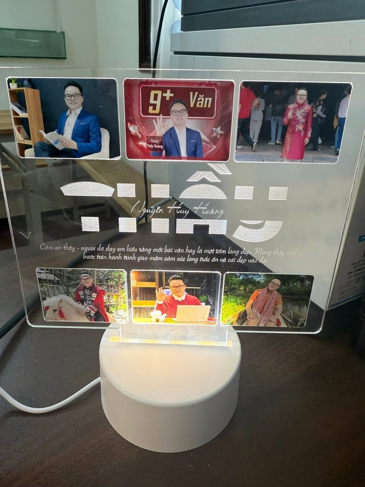<figcaption>Phần thưởng cuối năm</figcaption></figure></div>
</div>
<span class="pgno">37</span>
</div>
<div class="pg pgR tex" style="background-color: #F2ECD9; display: flex; flex-direction: column">
<p class="hand a up" style="margin: 0; font-size: var(--k); color: #22402F">Kết quả học tập · do 12V1 chấm</p>
<table class="hb">
<thead><tr><th>Môn</th><th>Điểm</th><th>Nhận xét của học trò</th></tr></thead>
<tbody>
${(grades || []).map((g, $index) => html`<tr class="a up" style="--d: ${g.d}s"><td>${g.mon}</td><td class="hb-score">${g.diem}</td><td>${g.nx}</td></tr>`)}
</tbody>
</table>
<div class="hb-foot">
<div><p class="hand" style="margin: 0; font-size: var(--k); color: #22402F">Kết quả: <b style="color: #C8361D">Được lên lớp — mãi mãi</b></p>
<p style="margin: .6cqw 0 0; font-family: 'Dancing Script', cursive; font-size: max(22px, 2.2cqw); color: #22402F">Thay mặt học trò · Lớp 12V1</p></div>
<div class="a stamp" style="--d: 1.4s; width: 9cqw; min-width: 84px; position: relative"><span style="position: absolute; inset: 0; display: flex; align-items: center; justify-content: center; font-family: 'Fraunces', serif; font-weight: 700; font-size: max(22px, 2.6cqw); color: #C8361D">10</span></div>
</div>
<span class="pgno">38</span>
</div>
</div>` : null}

${(s20) ? html`<div class="spread ${k20}">
<div class="pg pgL tex" style="background-color: #EDE1B8">
<p class="kicker a up" style="color: #7A5B1E">“Cánh đồng bất tận” — Nguyễn Ngọc Tư</p>
<div class="persp"><h2 class="h2 a stand" style="--d: .1s; color: #3B2A12">Cánh đồng<br />phía trước</h2></div>
<p class="txt a up" style="--d: .25s">Nguyễn Ngọc Tư viết về những phận người rong ruổi trên cánh đồng miền Tây mênh mông, đi mãi mà vẫn khát một chút hơi ấm tình người.</p>
<p class="txt a up" style="--d: .35s">Rời lớp Văn, chúng con cũng bước ra một cánh đồng như thế: giảng đường xa lạ, thành phố mới, những ngày không còn ai chữa bài cho mình. Nhưng hơi ấm ấy chúng con đã mang theo rồi. Mỗi lần chênh vênh, chỉ cần nhớ giọng thầy: “Học văn là học tập sự tử tế.”</p>
<div style="display: flex; gap: 2cqw; align-items: flex-start; margin-top: 1.6cqw" class="mstack">
<div class="sticky hand a pop" style="--d: .55s; --t: -2deg; font-size: var(--k); color: #3B2A12; flex: 1">Cánh đồng thì còn bất tận. Hành trang thì thầy đã gói đủ.</div>
<div class="a fromL" style="--d: .7s; flex: 0 0 42%"><figure class="pol" style="--t: 3deg"><span class="tape top t-sun"></span><figcaption>Hành trang là sách</figcaption></figure></div>
</div>
<span class="pgno">39</span>
</div>
<div class="pg pgR tex" style="background-color: #EDE1B8; display: flex; flex-direction: column">
<div class="a fromR" style="--d: .2s; flex: 1; min-height: 0; padding: .8cqw .6cqw 2.4cqw"><figure class="pol tall" style="--t: 2deg"><span class="tape top t-tre"></span><figcaption>Phía trước là cánh đồng</figcaption></figure></div>
<span class="pgno">40</span>
</div>
</div>` : null}

${(s21) ? html`<div class="spread ${k21}">
<div class="pg pgL tex" style="background-color: #F6C987">
<p class="kicker a up" style="color: #8E2414">Kết · “Tràng giang” — Huy Cận</p>
<div class="persp"><h2 class="h2 a stand" style="--d: .1s; color: #3A1A0E">Sông dài, trời rộng —<br />thuyền con đã ra khơi</h2></div>
<p class="txt a up" style="--d: .2s; color: #3A1A0E">Huy Cận nhìn con thuyền nhỏ trên dòng sông dài mà bâng khuâng. Giờ chúng con cũng là những con thuyền nhỏ đã rời bến lớp Văn, mỗi đứa một ngả: giảng đường, thành phố mới, những trang đời mới. Nhưng dòng chảy thầy khơi lên thì vẫn ở đó, và chúng con sẽ còn quay về. Bằng Việt nói: “Tiêu chuẩn vĩnh cửu của thơ ca là tình cảm.” Với chúng con, tiêu chuẩn vĩnh cửu của một người thầy cũng vậy.</p>
<div style="display: grid; grid-template-columns: repeat(2, minmax(0, 1fr)); gap: 2.4cqw; margin-top: 2.6cqw; align-items: start">
<div class="a fromL" style="--d: .35s"><figure class="pol" style="--t: -4deg"><span class="tape top t-tre"></span><figcaption>Cảm ơn thầy</figcaption></figure></div>
<div class="a fromR" style="--d: .55s; margin-top: 3cqw"><figure class="pol" style="--t: 3deg"><span class="tape top t-red"></span>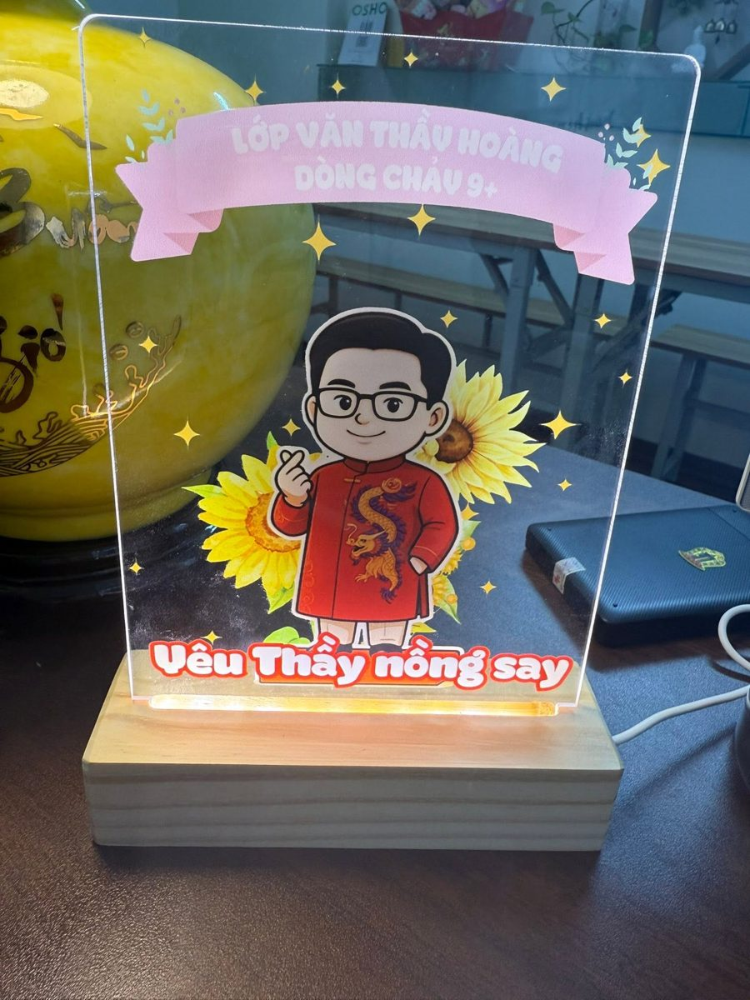<figcaption>“Yêu thầy nồng say”</figcaption></figure></div>
</div>
<span class="pgno">41</span>
</div>
<div class="pg pgR tex" style="background-color: #F6C987; display: flex; flex-direction: column; align-items: center; text-align: center">
<div class="a stamp" style="--d: .3s; width: 13cqw; height: 13cqw; min-width: 120px; min-height: 120px; margin-top: 1cqw; border-radius: 50%; background: #C8361D; color: #FBE6BE; display: flex; flex-direction: column; align-items: center; justify-content: center; box-shadow: 0 0 0 5px #F6C987, 0 0 0 8px #C8361D">
<span style="font-family: 'Fraunces', serif; font-weight: 600; font-size: max(48px, 6cqw); line-height: 1">10</span>
<span class="hand" style="font-size: var(--cap)">cho thầy</span>
</div>
<p class="txt a up" style="--d: .6s; max-width: 90%; color: #3A1A0E">Chúc thầy luôn mạnh khỏe, giữ mãi ngọn lửa với văn chương, và có thêm thật nhiều lớp “Dòng chảy” chảy mãi về phía tử tế.</p>
<p class="a up" style="--d: .8s; font-family: 'Dancing Script', cursive; font-size: max(28px, 3cqw); color: #8E2414; margin: 1cqw 0 0">Tập thể lớp 12V1</p>
<div class="a up" style="--d: 1s; width: 86%; margin-top: auto"></div>
<span class="pgno">42</span>
</div>
</div>` : null}

${(s22) ? html`<div class="spread ${k22}">
<div class="pg pgL tex" style="background-color: #F6EDDA">
<p class="kicker a up" style="color: #7A4A1E">Phụ lục</p>
<h2 class="h2 a up" style="--d: .1s; font-size: calc(var(--h2) * .75)">Những trang thầy không ngờ chúng con lưu lại</h2>
<p class="hand a up" style="--d: .2s; margin: .6cqw 0 0; font-size: var(--k); color: #7A4A1E">“Chi tiết nhỏ làm nên nhà văn lớn” (Gorky). Và chi tiết nhỏ cũng làm nên một người thầy đáng nhớ.</p>
<div style="display: grid; grid-template-columns: repeat(3, minmax(0, 1fr)); gap: 2cqw 1.6cqw; margin-top: 2cqw; padding: 0 1cqw">
${(fun || []).map((f, $index) => html`<div class="a drop" style="--d: ${f.d}s"><figure class="pol" style="--t: ${f.t}deg"><span class="tape top ${f.tape}"></span><figcaption>${f.cap}</figcaption></figure></div>`)}
</div>
<span class="pgno">43</span>
</div>
<div class="pg pgR" style="background: #8E1F17; color: #FBE6BE; display: flex; flex-direction: column; align-items: center; justify-content: center; text-align: center; gap: 1.6cqw">
<div style="position: absolute; inset: 1.4cqw; border: 2px solid #E3B556; pointer-events: none"></div>
<div class="a pop" style="--d: .3s; width: 30%"></div>
<p class="a up" style="--d: .5s; margin: 0; font-family: 'Fraunces', serif; font-style: italic; font-size: max(22px, 2.6cqw)">Hết — nhưng dòng chảy thì còn mãi.</p>
<p class="a up hand" style="--d: .7s; margin: 0; font-size: var(--k); color: #F2C063">Lớp 12V1 · Dòng chảy 9+ · 20/11/2026</p>
<button type="button" class="navbtn a up" onClick=${restart} style="--d: .9s; background: #E3B556; color: #3B1410">Đọc lại từ đầu</button>
</div>
</div>` : null}

${(flipping) ? html`<div class="leaf ${leafCls}"><div class="lf ${leafFrontCls}" style="background-color: ${leafFront}"></div><div class="lb ${leafBackCls}" style="background-color: ${leafBack}"></div></div>` : null}

${(canPrevCorner) ? html`<button type="button" class="corner l" onClick=${prev} aria-label="Lật về trang trước"><span></span></button>` : null}
${(canNextCorner) ? html`<button type="button" class="corner r" onClick=${next} aria-label="Lật sang trang sau"><span></span></button>` : null}
</div>
</div>

${(gateOn) ? html`<div class="gate ${gateCls}">
<div class="gl"></div><div class="gr"></div>
<div class="petals" aria-hidden="true">${(petals || []).map((pt, $index) => html`<span class="petal" style="--x: ${pt.x}px; --y: ${pt.y}px; --r: ${pt.r}deg; --c: ${pt.c}; --dl: ${pt.d}s; width: ${pt.w}px"></span>`)}</div>
<div class="gate-in">
<p class="hand a up" style="--d: 0s; margin: 0; font-size: 20px; color: #7A5B2E">Lớp 12V1 · Dòng chảy 9+ · 20.11.2026</p>
<p class="a up" style="--d: .15s; margin: 18px 0 0; font-family: 'Fraunces', serif; font-variation-settings: 'SOFT' 100; font-weight: 600; font-size: clamp(34px, 6vw, 64px); line-height: 1.05; color: #2A231C">Một món quà nhỏ<br />gửi thầy Hoàng</p>
<p class="a up" style="--d: .3s; margin: 18px 0 0; font-size: 17px; line-height: 1.7; color: #5E4A2E; max-width: 520px; text-wrap: balance">Thầy bật loa lên một chút nhé, có bài hát của lớp đi cùng.</p>
<button type="button" class="navbtn a pop" onClick=${openGift} style="--d: .5s; margin-top: 32px; min-height: 56px; padding: 0 30px; background: #C8361D; color: #FBE6BE; font-size: 22px">
<svg width="20" height="20" viewBox="0 0 24 24" fill="none" stroke="currentColor" stroke-width="1.8" stroke-linecap="round" stroke-linejoin="round" aria-hidden="true"><path d="M9 18V5l12-2v13"></path><circle cx="6" cy="18" r="3"></circle><circle cx="18" cy="16" r="3"></circle></svg>
Chạm để mở món quà</button>
</div>
</div>` : null}
<audio id="bgm" src="assets/audio/giai-dieu-9.mp3" loop preload="auto"></audio>
<button type="button" class="musicBtn" onClick=${togglePlay} aria-label=${musicAria}>
<svg class=${noteCls} width="20" height="20" viewBox="0 0 24 24" fill="none" stroke="currentColor" stroke-width="1.8" stroke-linecap="round" stroke-linejoin="round" aria-hidden="true"><path d="M9 18V5l12-2v13"></path><circle cx="6" cy="18" r="3"></circle><circle cx="18" cy="16" r="3"></circle></svg>
<span>${musicLabel}</span></button>
<button type="button" class="autoBtn" onClick=${autoToggle} aria-label=${autoAria}>
<svg width="18" height="18" viewBox="0 0 24 24" fill="currentColor" aria-hidden="true"><path d=${autoIcon}></path></svg>
<span>${autoLabel}</span></button>
${(eggOpen) ? html`<div class="egg" onClick=${eggClose}>
<div class="egg-petals" aria-hidden="true">${(petals || []).map((pt, $index) => html`<span class="petal" style="--x: ${pt.x}px; --y: ${pt.y}px; --r: ${pt.r}deg; --c: ${pt.c}; --dl: ${pt.d}s; width: ${pt.w}px"></span>`)}</div>
<div class="egg-card a pop" style="--d: -.45s">
<p class="hand" style="margin: 0; font-size: 20px; color: #C8361D">Thầy đã tìm ra bí mật của lớp 12V1!</p>
<p style="margin: 12px 0 0; font-family: 'Fraunces', serif; font-size: clamp(22px, 3vw, 32px); line-height: 1.25; color: #2A231C">Điểm Văn của chúng con là 9+.<br />Còn điểm thương thầy thì không có thang đo.</p>
<p class="hand" style="margin: 14px 0 0; font-size: 17px; color: #7A5B2E">Bấm bất kỳ đâu để đóng</p>
</div>
</div>` : null}
<nav style="display: flex; align-items: center; gap: 16px" aria-label="Lật trang">
<button type="button" class="navbtn" onClick=${prev} disabled=${atStart} aria-label="Trang trước">
<svg width="20" height="20" viewBox="0 0 24 24" fill="none" stroke="currentColor" stroke-width="2" stroke-linecap="round" aria-hidden="true"><path d="M19 12H5M11 6l-6 6 6 6"></path></svg></button>
<div class="river">
<span class="river-label hand">${label}</span>
<div class="river-track"><span class="river-line"></span><span class="river-fill" style="width: ${progress}%"></span>
${(dots || []).map((dt, $index) => html`<button type="button" class="dot ${dt.cls}" style="left: ${dt.x}%" onClick=${dt.go} aria-label="Tới trang ${dt.name}" title=${dt.name}></button>`)}
<span class="boat" style="left: ${progress}%"><svg width="30" height="22" viewBox="0 0 30 22" aria-hidden="true"><path d="M2 12h26l-5 8H7z" fill="#FFF7E6" stroke="#1F6F6B" stroke-width="1.6" stroke-linejoin="round"></path><path d="M15 12V2l8 10z" fill="#C8361D"></path><path d="M14 12V5l-6 7z" fill="#F2C063"></path></svg></span>
</div>
</div>
<button type="button" class="navbtn" onClick=${next} disabled=${atEnd} aria-label="Trang sau">
<svg width="20" height="20" viewBox="0 0 24 24" fill="none" stroke="currentColor" stroke-width="2" stroke-linecap="round" aria-hidden="true"><path d="M5 12h14M13 6l6 6-6 6"></path></svg></button>
</nav>

${(showFall) ? html`<div class="ambient" aria-hidden="true">${(fall || []).map((f, $index) => html`<span class="fall" style="left: ${f.x}%; --dl: ${f.d}s; --du: ${f.du}s; --c: ${f.c}; width: ${f.w}px"></span>`)}</div>` : null}

${(hasZoom) ? html`<div class="lightbox" onClick=${closeZoom}>
<figure class="a pop" style="--d: -.45s; margin: 0"><figcaption class="hand">${zoomCap} · bấm bất kỳ đâu để đóng</figcaption></figure>
</div>` : null}

${(hasOpen) ? html`<div style="position: fixed; inset: 0; z-index: 80; background: rgba(42,15,11,.72); display: flex; align-items: center; justify-content: center; padding: 20px">
<article class="a up" style="--d: -.45s; position: relative; width: 100%; max-width: 620px; max-height: 85vh; overflow-y: auto; padding: 52px 40px 40px; background: #FFFDF6; background-image: repeating-linear-gradient(180deg, transparent 0 33px, #D6E2F0 33px 34px)">
<span class="tape top t-pink" style="width: 120px; height: 28px"></span>
<button type="button" onClick=${close} aria-label="Đóng thư" style="position: absolute; top: 10px; right: 10px; width: 44px; height: 44px; border: none; background: transparent; color: #3B2A12; cursor: pointer">
<svg width="20" height="20" viewBox="0 0 24 24" fill="none" stroke="currentColor" stroke-width="2" aria-hidden="true"><path d="M6 6l12 12M18 6L6 18"></path></svg></button>
<p style="font-family: 'Dancing Script', cursive; font-size: 32px; margin: 0 0 14px">Kính gửi thầy Hoàng,</p>
<p class="hand" style="margin: 0; font-size: 22px; line-height: 34px; white-space: pre-line">${openText}</p>
<p style="font-family: 'Dancing Script', cursive; font-size: 28px; text-align: right; margin: 24px 0 0; color: #C8361D">— ${openName}</p>
</article>
</div>` : null}
</main>`; } }
const comp = new Component({});
const root = document.getElementById('app');
let queued = false;
function draw() { queued = false; render(view(comp.renderVals()), root); }
function schedule() { if (!queued) { queued = true; Promise.resolve().then(draw); } }
draw();
if (comp.componentDidMount) comp.componentDidMount();
// Phím tắt trên máy tính: Enter mở quà, ← → lật trang, Esc đóng thư / ảnh
document.addEventListener('keydown', (e) => {
  if (e.target.closest && e.target.closest('input, textarea, video')) return;
  if (comp.state.gate === 'on') { if (e.key === 'Enter') comp.renderVals().openGift(); return; }
  if (e.key === 'ArrowRight') comp.go(comp.state.page + 1);
  else if (e.key === 'ArrowLeft') comp.go(comp.state.page - 1);
  else if (e.key === 'Escape') comp.setState({ open: -1, zoom: null });
});
</script>
</body>
</html>
